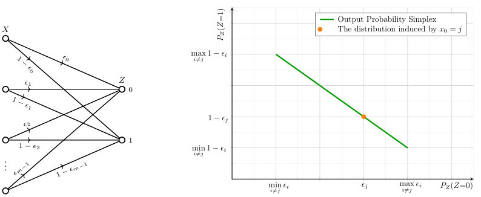
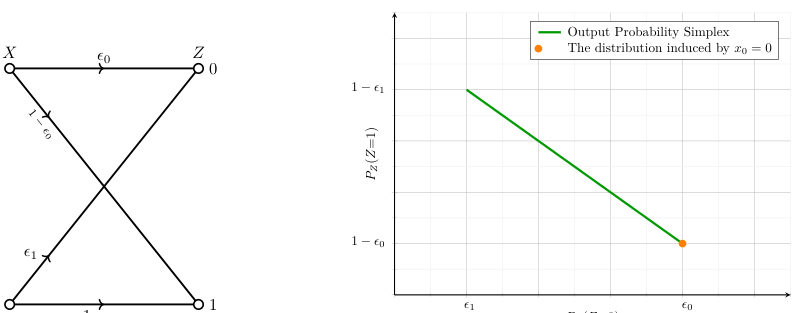

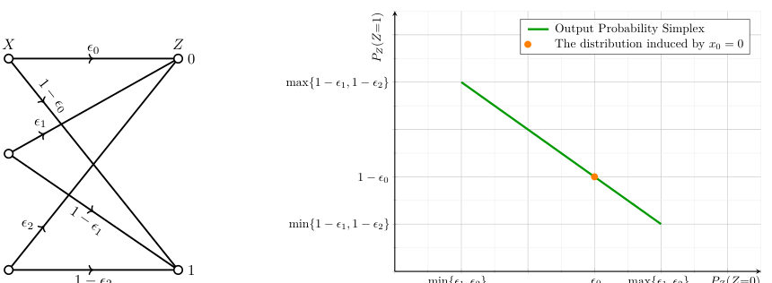
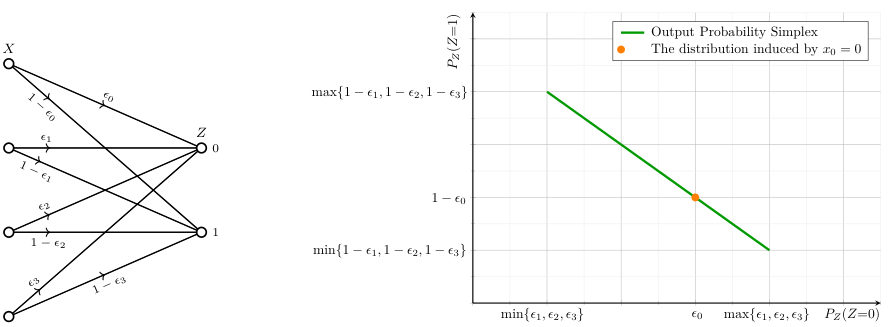
← Index · ← Previous · Next →
Authors: Lizhong Fu, Jianan Wei, Wenguan Wang, Honghui Shang
Type: theory · Category: numerical methods · PDF: https://arxiv.org/pdf/2609.37733v1
Analysis basis: full PDF text, analyzed in chunks
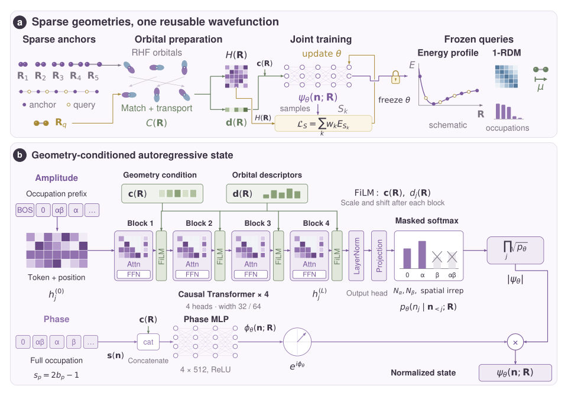
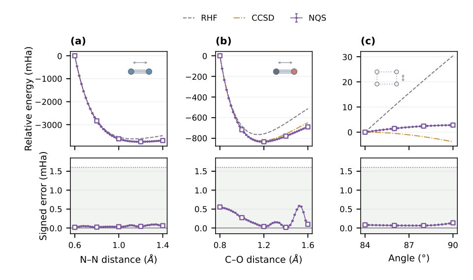
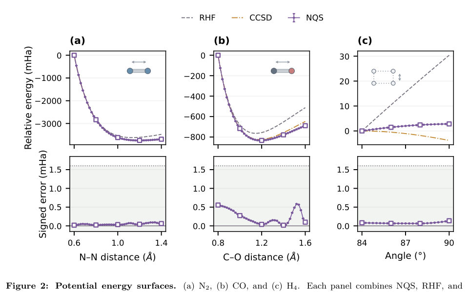
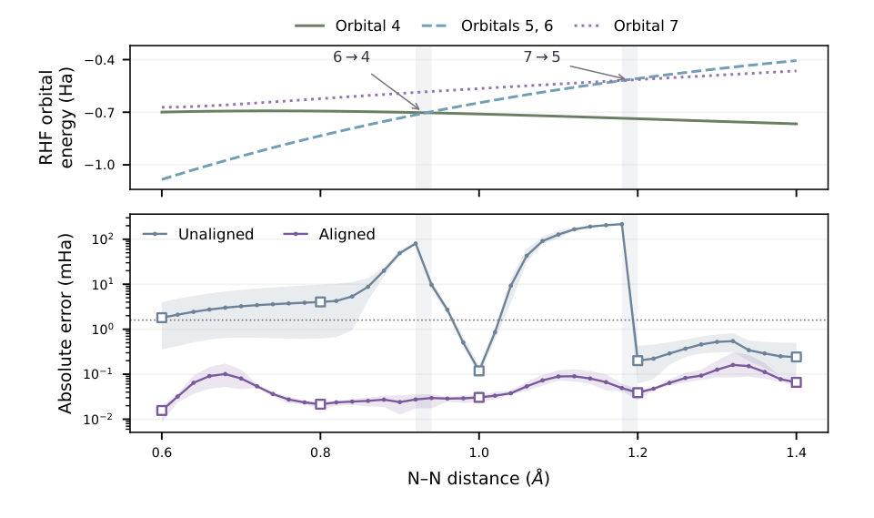
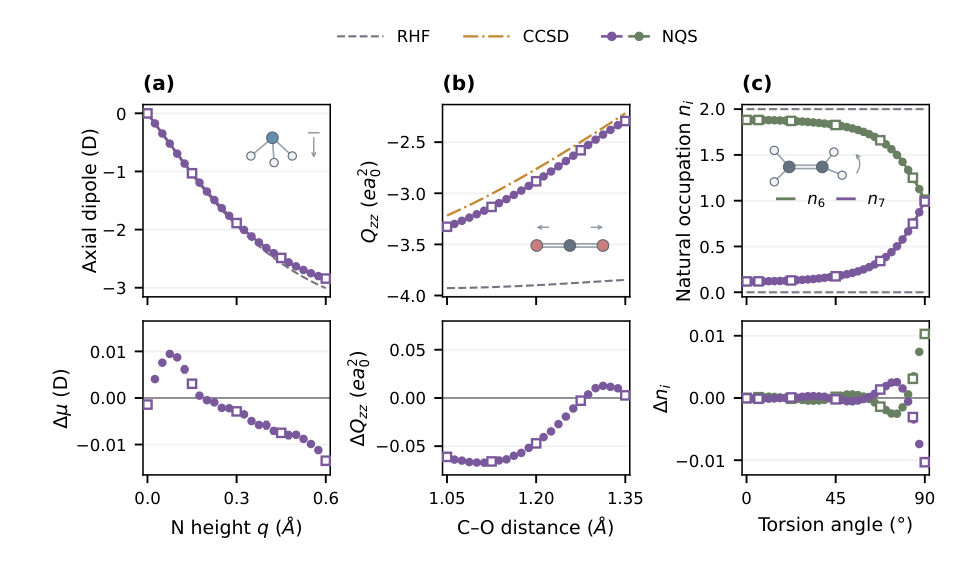
Summary. This paper introduces Foundation Neural-Network Quantum States (FNQSs) to efficiently calculate molecular Potential Energy Surfaces (PESs) in second quantization. By using a single, geometry-conditioned autoregressive model and implementing orbital alignment, the method achieves chemical accuracy at novel geometries without retraining. This approach drastically reduces the computational cost of mapping complex molecular energy landscapes.
Why it may be interesting. This work represents a significant advancement in applying deep learning to quantum chemistry, providing a highly scalable and efficient framework for mapping complex, high-dimensional potential energy surfaces that is directly relevant to molecular dynamics and quantum simulation.
Main problem. The core challenge is developing a method to construct Molecular Potential Energy Surfaces (PESs) by sharing a single, optimized representation of the electronic wavefunction across different molecular geometries, thereby avoiding repeated, expensive variational optimization at every geometry.
Main result. The proposed method achieves chemical accuracy at untrained geometries for small molecules and yields massive computational cost reductions (estimated $25.8 imes$ end-to-end GPU-cost reduction) compared to independent optimization.
Method. The authors introduce geometry-conditioned Foundation Neural-Network Quantum States (FNQSs) using an autoregressive Transformer architecture to parameterize the wavefunction in second quantization. Orbital alignment is crucial for maintaining basis consistency across geometries.
Model / system. The system is molecular electronic structure, treated in second quantization using an occupation-basis model. The Hamiltonian is parameterized, and the state $|\Psi_ heta(R) angle$ is learned by conditioning the autoregressive network on the molecular geometry $R$ and aligned orbital descriptors.
Key observables. Electronic energies (PES), dipoles, quadrupoles, and natural occupations.
Important parameters / regimes. Chemical accuracy threshold (1.6 mHa), Mean Absolute Error (MAE) values (down to 0.049-0.085 mHa), and computational cost reduction factors ($\sim 25.8 imes$).
Assumptions / limitations. The method assumes that orbital identities and phases can be consistently aligned and transported across different geometries to ensure a shared, continuous basis representation.
Figures summary. Figures illustrate the process of orbital matching and phase alignment; comparisons show energy errors for various molecules ($ ext{N}_2$, $ ext{CO}$, $ ext{H}_4$) across different training/conditioning strategies, highlighting the necessity of alignment and descriptor conditioning.
Paper structure. The paper introduces the FNQS architecture, details the necessity of orbital alignment for basis transport, presents results showing high accuracy on PESs at untrained geometries, and quantifies the massive computational savings achieved by this shared representation.
Second-quantized neural-network quantum states have achieved accurate molecular energies, but extending them across molecular geometries requires a shared representation of the geometry-dependent wavefunction coefficients. We introduce geometry-conditioned foundation neural-network quantum states for molecular electronic structure in second quantization. A single autoregressive model learns a family of ground states from sparse anchor geometries and provides wavefunctions at untrained geometries without further optimization. Orbital alignment matches orbital identities and transports their phases, establishing an aligned orbital basis across geometries. Frozen energies reach chemical accuracy at every untrained query geometry for N$_2$, CO, and H$_4$. On additional molecular paths, the energy-trained wavefunctions yield dipoles, quadrupoles, and natural occupations without property labels. Across three paired N$_2$ training seeds, orbital alignment lowers the mean absolute energy error over all untrained query geometries from 34-37 mHa to 0.049-0.085 mHa. At approximately 1 mHa mean absolute error, frozen evaluation reduces the per-geometry cost by $986\times$ relative to independent optimization, yielding an estimated $25.8\times$ end-to-end GPU-cost reduction on a 161-point N$_2$ grid.
Authors: Neha Sharma, Sushanta Mandal, Nikita Sharma, Amritpal, Sangeeta Thakur, Viktor Ukleev, Chen Luo, Florin Radu, S. D. Kaushik, Tirthankar Chakraborty, Sanjoy Kr. Mahatha, Denis Pelloquin, Sourav Marik
Type: both · Category: strongly correlated electrons · PDF: https://arxiv.org/pdf/2609.37792v1
Analysis basis: full PDF text, analyzed in chunks
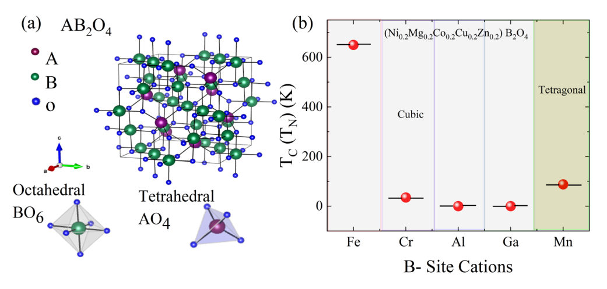
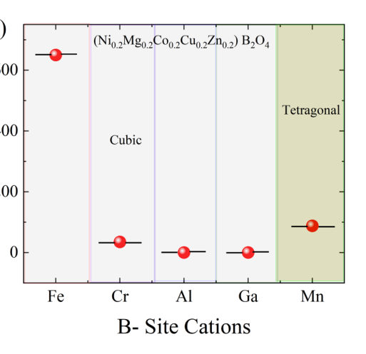
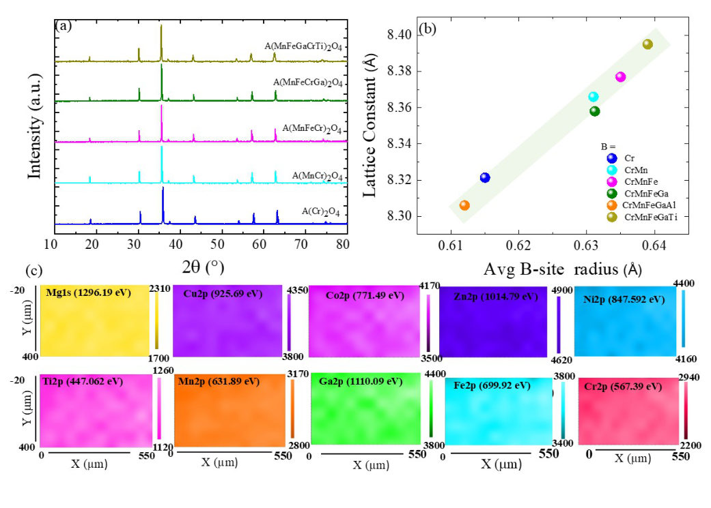
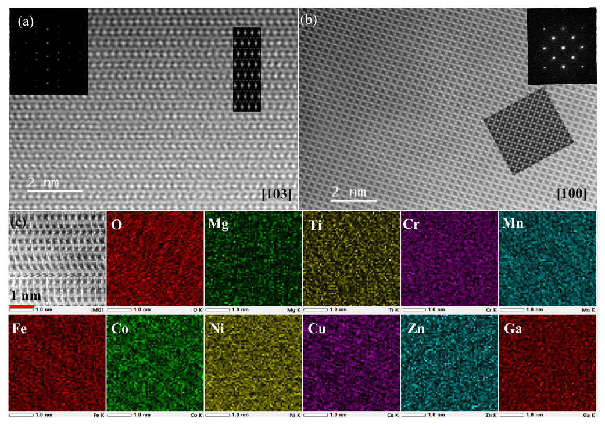
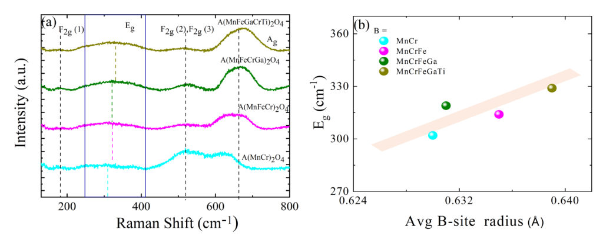
Summary. This work demonstrates that high-entropy spinel oxides maintain robust, long-range ferrimagnetic ordering despite extreme chemical disorder. By systematically varying the cation composition, the researchers found that the magnetic transition temperature ($T_C$) follows a simple, predictable linear average. This establishes a powerful, disorder-driven pathway for tuning magnetic properties in complex functional oxides.
Why it may be interesting. The concept of emergent, predictable magnetic order arising from quenched, high-entropy disorder is highly relevant to understanding complex magnetic ground states in strongly correlated materials, suggesting new design rules beyond simple superexchange models.
Main problem. The study investigates how extreme configurational disorder, induced by high-entropy stabilization, affects the magnetic ordering in spinel oxides.
Main result. Robust, long-range ferrimagnetic ordering is observed, and the magnetic transition temperature ($T_C$) exhibits a predictable, linear, arithmetic average dependence on the constituent single-site systems.
Method. The research combines structural characterization (XRD, STEM) with advanced magnetic measurements (XMCD, Neutron Powder Diffraction) and theoretical modeling (mean-field approximations).
Model / system. The system is spinel-type high-entropy oxides, $ ext{AB}_2 ext{O}_4$, where both the A and B sites are composed of multiple randomly distributed principal cations. The magnetic behavior is analyzed using mean-field theory.
Key observables. Magnetic transition temperature ($T_C$), total angular momentum ($J$), magnetic moments ($\mu_B$), and the magnetic structure determined via NPD.
Important parameters / regimes. Compositional fractions ($p_i$), temperature ($T$), and the average exchange interaction ($ ext{J}_{ ext{ex}}$).
Assumptions / limitations. The magnetic ordering is explained within a mean-field framework, assuming the exchange interaction is governed by an effective, averaged interaction across the disordered lattice.
Figures summary. Figures show structural confirmation (Vegard's law, STEM homogeneity), magnetic measurements (FC magnetization vs. T), and NPD patterns confirming long-range magnetic order at low temperatures.
Paper structure. The paper progresses from establishing the structural stability of the high-entropy phase to characterizing the magnetic response using multiple techniques, culminating in the demonstration of predictable, long-range ferrimagnetism despite extreme disorder.
High-entropy stabilization chemistry is redefining materials design by transforming configurational disorder, arising from the deliberate incorporation of multiple principal cations, into a thermodynamic advantage that promotes phase stability and enables emergent functionalities. In this work, we investigate the evolution of magnetic ordering in spinel-type high entropy oxides by systematically varying the cation composition of the B site within a fixed high-entropy A-site matrix, (Ni$_{0.2}$Mg$_{0.2}$Co$_{0.2}$Cu$_{0.2}$Zn$_{0.2}$)B$_2$O$_4$. Upon introducing multicomponent B-site configurations, we uncover a strikingly linear dependence of the magnetic transition temperature (T$_C$) on the T$_C$s of the corresponding single B-site high-entropy systems. Remarkably, this trend persists even in highly complex (Ni$_{0.2}$Mg$_{0.2}$Co$_{0.2}$Cu$_{0.2}$Zn$_{0.2}$)(Cr$_{0.2}$Mn$_{0.2}$Fe$_{0.2}$Ga$_{0.2}$X$_{0.2}$)$_2$O$_4$, X = Al and Ti. Despite the material's extremely high degree of disorder, absence of a dominant magnetic ion or a straightforward superexchange pathway, detailed magnetization measurements, low-temperature X-ray magnetic circular dichroism, and neutron powder diffraction studies reveal robust long-range ferrimagnetic ordering. These results reveal an emergent predictability in ferrimagnetic high-entropy spinel oxides, where, despite extreme configurational disorder and competing interactions, robust ferrimagnetic order can arise from, rather than be hindered by, extreme configurational disorder. This establishes a pathway for predictively tuning magnetic transition temperatures in high-entropy oxides beyond conventional ordered systems.
Authors: Hassan ZivariFard, Xiaodong Wang, Alexei Ashikhmin
Type: theory · Category: quantum information and computing · PDF: https://arxiv.org/pdf/2609.36162v1
Analysis basis: full PDF text, analyzed in chunks




Summary. This paper rigorously determines the conditions required for achieving positive covert communication rates across classical, classical-quantum, and quantum channels. It establishes necessary and sufficient conditions using geometric and information-theoretic tools, showing that channel structure dictates the achievable secrecy capacity. The findings generalize fundamental limits for secure communication in modern quantum information theory.
Why it may be interesting. This work provides fundamental information-theoretic bounds on secrecy and detectability in quantum communication, which is crucial for designing secure quantum networks and understanding the limits of quantum key distribution.
Main problem. The paper investigates the fundamental conditions under which positive covert communication rates can be achieved across various communication channels, including classical, classical-quantum, and fully quantum settings.
Main result. Positive covert rates are achievable under specific geometric conditions related to the dimensions of input and output probability simplices, and the analysis shows that mixing the innocent state can guarantee feasibility for quantum channels.
Method. The analysis employs geometric interpretations of the covertness constraint, utilizing concepts like the dimension of probability simplices, mutual information, and trace distance bounds derived from random coding techniques.
Model / system. The study models communication over Discrete Memoryless Channels (DMCs), encompassing point-to-point, Multiple-Access Channels (MACs), classical-quantum, and general quantum channels.
Key observables. Covert communication rate, channel input/output probability simplices, and the trace distance between the actual and innocent output states.
Important parameters / regimes. The dimensionality of the input vs. output probability simplices, and the rate pair $(R, R_K)$ for covert capacity.
Assumptions / limitations. The analysis often relies on the assumption that the innocent symbol/state can be chosen appropriately, and it contrasts with known limitations like the square-root law for certain channels.
Figures summary. Figures illustrate the concept of covert communication over point-to-point channels and show the structure of the output probability simplex for binary-output DMCs.
Paper structure. The paper develops results sequentially, first for classical point-to-point channels, then extending to MACs and classical-quantum settings, culminating in a detailed analysis of the covertness constraint for general quantum channels.
In this paper, we study the conditions under which covert communication at positive rates is feasible over discrete memoryless classical, classical-quantum, and quantum channels. For classical point-to-point channels, we show that if the dimension of the channel input probability simplex exceeds that of the channel output probability simplex, equivalently, if the input alphabet has larger cardinality than the output alphabet, then positive covert rates are achievable for certain classes of Discrete Memoryless Channels (DMCs). We further show that allowing the innocent symbol (i.e., the symbol transmitted in the no-communication mode) to be chosen appropriately can enlarge the class of DMCs for which positive covert rates are achievable. We also study covert communication over classical Multiple-Access Channels (MACs), where the additional transmitter effectively enlarges the set of available channel input pairs, and we show that the conditions required to satisfy the covertness constraint are less restrictive for MACs than for point-to-point channels. We extend these results to classical-quantum DMCs by showing that if the dimension of the input probability simplex exceeds the affine dimension of the set of output states that can be induced at the channel output, then positive covert rates are achievable for certain classes of classical-quantum DMCs. Finally, for quantum channels, we show that if the innocent state (i.e., the state transmitted in the no-communication mode) is mixed, then the covertness constraint can always be satisfied by a non-trivial input ensemble. Consequently, positive covert rates are achievable whenever the legitimate receiver can distinguish at least two states in a suitable such ensemble.
Authors: Lucia Malíčková, Petr Klenovský
Type: theory · Category: strongly correlated electrons · PDF: https://arxiv.org/pdf/2609.36060v1
Analysis basis: full PDF text, analyzed in chunks
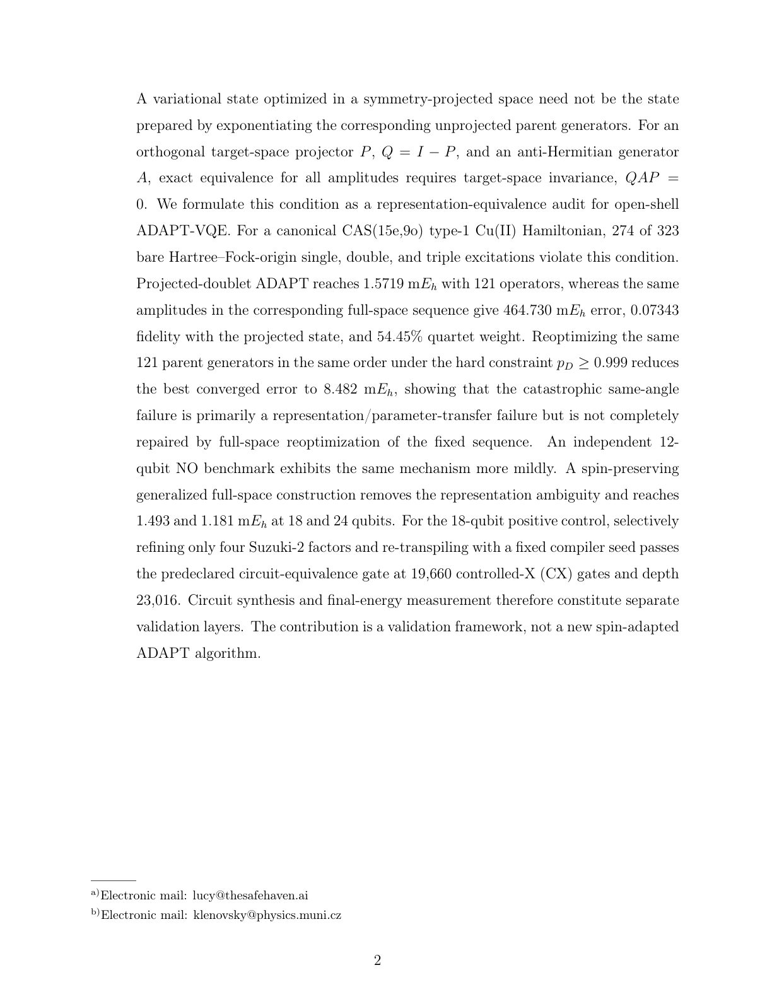
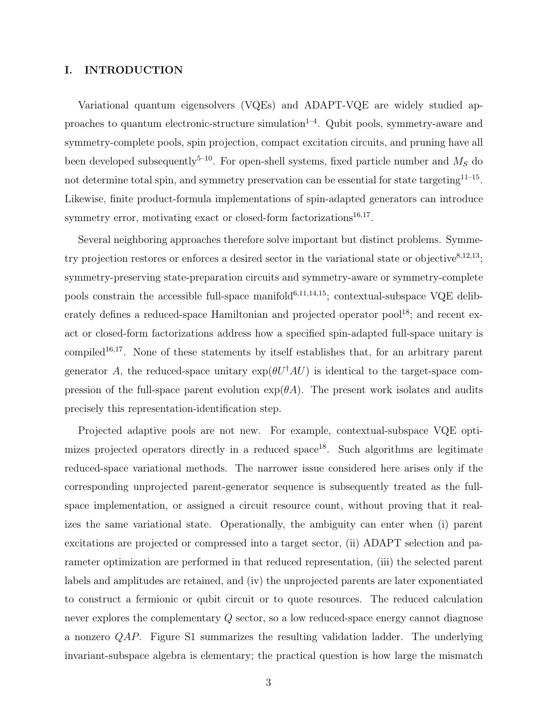
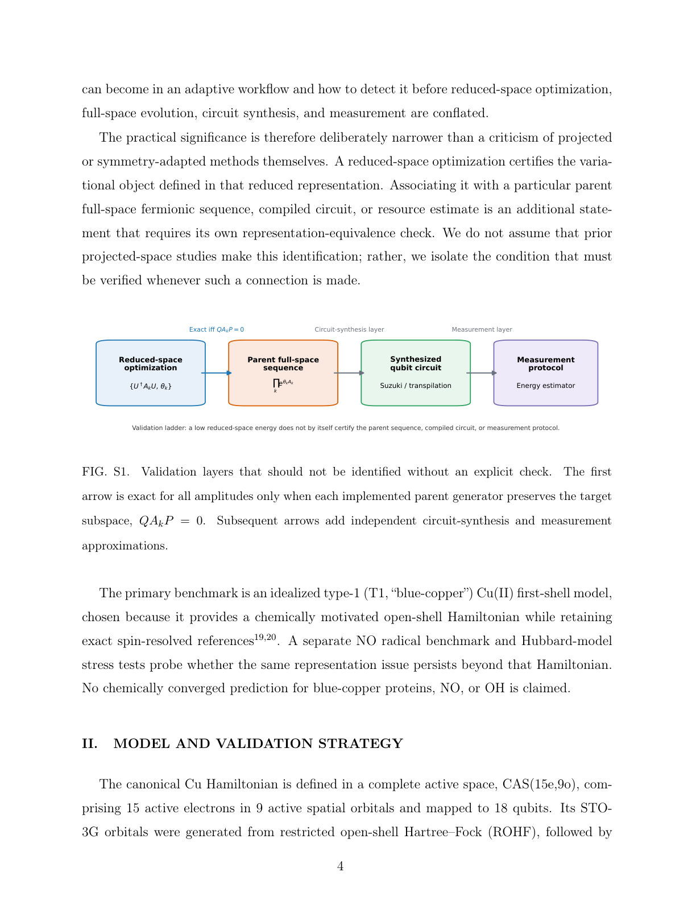
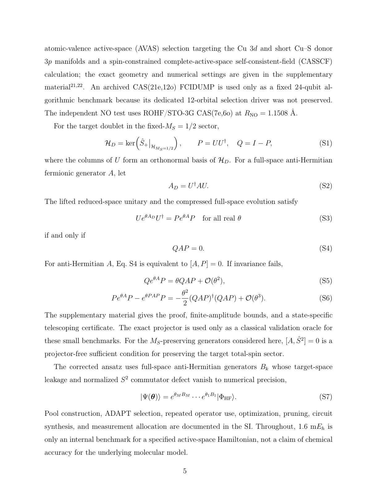
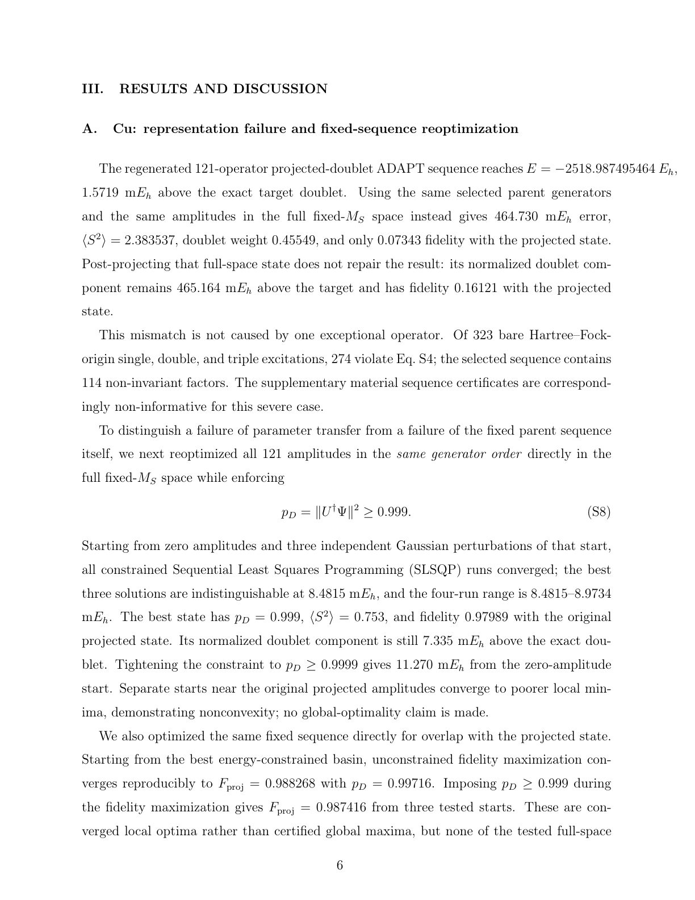
Summary. This work develops a rigorous validation framework to audit the equivalence between quantum states optimized in symmetry-projected subspaces and their full-space parent generators. By testing Cu(II) and NO systems, the authors show that parameter transfer from reduced to full space often fails catastrophically. The key takeaway is that quantum simulation requires validating not just the energy, but the entire computational pipeline: the state representation, the generating sequence, the circuit compilation, and the final measurement.
Why it may be interesting. It provides crucial methodological rigor for quantum chemistry simulations, warning that simply minimizing energy in a restricted basis is insufficient proof of the underlying physical state when mapping to quantum hardware circuits.
Main problem. The paper audits the representation equivalence between a quantum state optimized in a symmetry-projected subspace and the state generated by exponentiating the corresponding unprojected parent generators in the full Hilbert space.
Main result. The study demonstrates that low energy achieved in a reduced-space optimization does not guarantee the correct full-space circuit implementation, requiring explicit representation-equivalence checks.
Method. The authors use ADAPT-VQE within a 'validation ladder' framework, comparing results from projected ansätze against full-space reoptimization and circuit synthesis.
Model / system. The calculations are performed on open-shell electronic structure problems, specifically using a canonical CAS(15e,9o) type-1 Cu(II) Hamiltonian, and are extended to larger NO systems.
Key observables. Energy error ($ ext{mEh}$), projected fidelity, quartet weight, and the violation of the representation-equivalence condition ($ ext{QAP}=0$).
Important parameters / regimes. The comparison involves comparing results from projected-doublet ADAPT to full-space sequences, and later testing 18- and 24-qubit NO systems.
Assumptions / limitations. The primary assumption is that the reduced-space optimization only certifies the variational object within that subspace, necessitating external validation for the full circuit.
Figures summary. Figures illustrate the 'Validation ladder' showing multiple independent validation steps are necessary, and show energy error convergence for Cu and NO systems under different compilation schedules.
Paper structure. The paper progresses by first establishing the theoretical condition for equivalence ($ ext{QAP}=0$), demonstrating failures using the Cu(II) Hamiltonian, then showing improvements via constrained reoptimization, and finally extending the validation to larger, more complex qubit systems (NO).
A variational state optimized in a symmetry-projected space need not be the state prepared by exponentiating the corresponding unprojected parent generators. For an orthogonal target-space projector $P$, $Q=I-P$, and an anti-Hermitian generator $A$, exact equivalence for all amplitudes requires target-space invariance, $QAP=0$. We formulate this condition as a representation-equivalence audit for open-shell ADAPT-VQE. For a canonical CAS(15e,9o) type-1 Cu(II) Hamiltonian, 274 of 323 bare Hartree--Fock-origin single, double, and triple excitations violate this condition. Projected-doublet ADAPT reaches 1.5719 m$E_h$ with 121 operators, whereas the same amplitudes in the corresponding full-space sequence give 464.730 m$E_h$ error, 0.07343 fidelity with the projected state, and 54.45\% quartet weight. Reoptimizing the same 121 parent generators in the same order under the hard constraint $p_D\ge0.999$ reduces the best converged error to 8.482 m$E_h$, showing that the catastrophic same-angle failure is primarily a representation/parameter-transfer failure but is not completely repaired by full-space reoptimization of the fixed sequence. An independent 12-qubit NO benchmark exhibits the same mechanism more mildly. A spin-preserving generalized full-space construction removes the representation ambiguity and reaches 1.493 and 1.181 m$E_h$ at 18 and 24 qubits. For the 18-qubit positive control, selectively refining only four Suzuki-2 factors and re-transpiling with a fixed compiler seed passes the predeclared circuit-equivalence gate at 19,660 controlled-X (CX) gates and depth 23,016. Circuit synthesis and final-energy measurement therefore constitute separate validation layers. The contribution is a validation framework, not a new spin-adapted ADAPT algorithm.
Authors: Noam Scully, Sisi Zhou
Type: theory · Category: quantum information and computing · PDF: https://arxiv.org/pdf/2609.36127v1
Analysis basis: full PDF text, analyzed in chunks
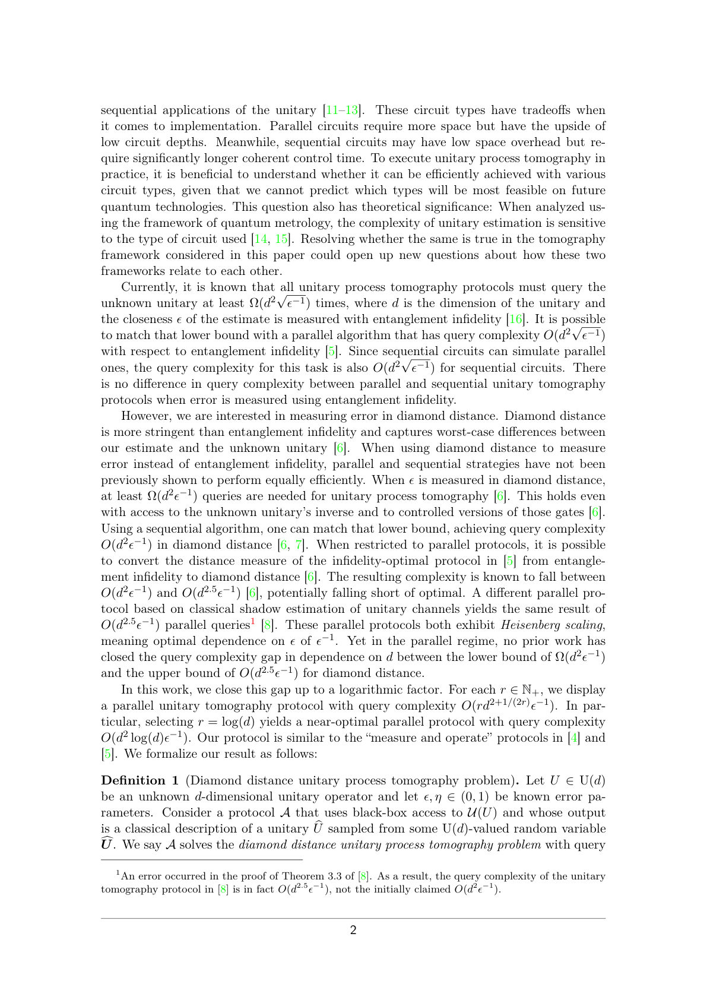
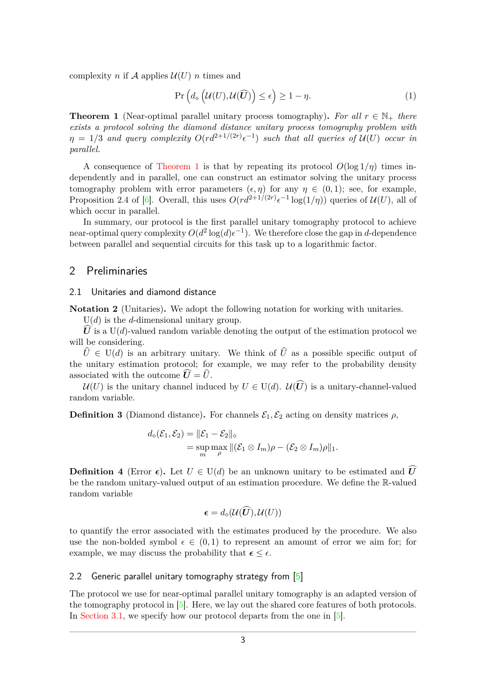
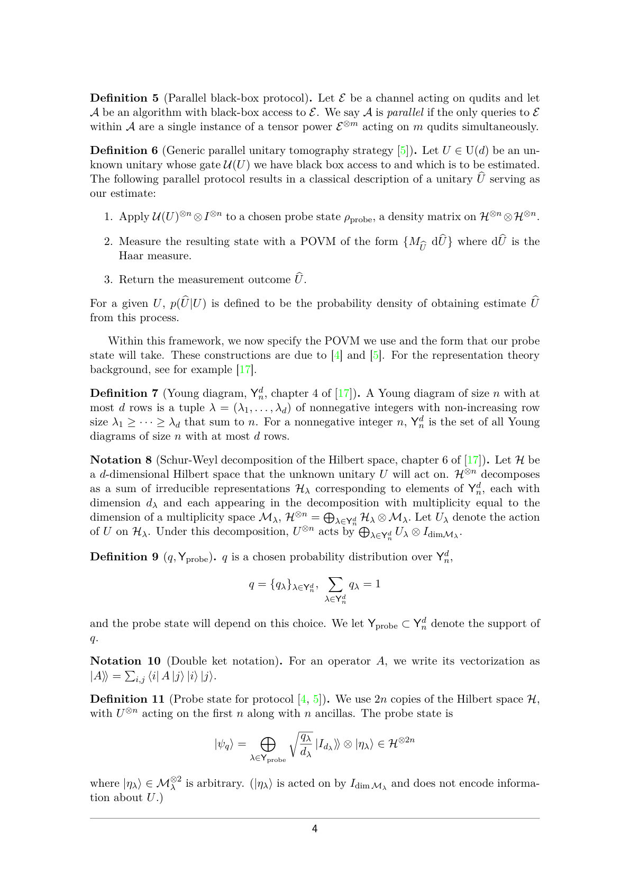
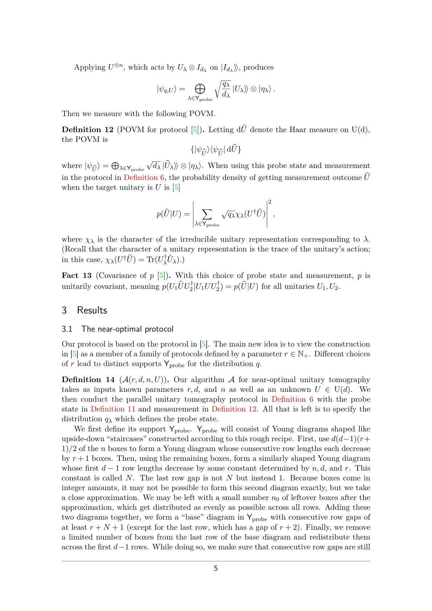
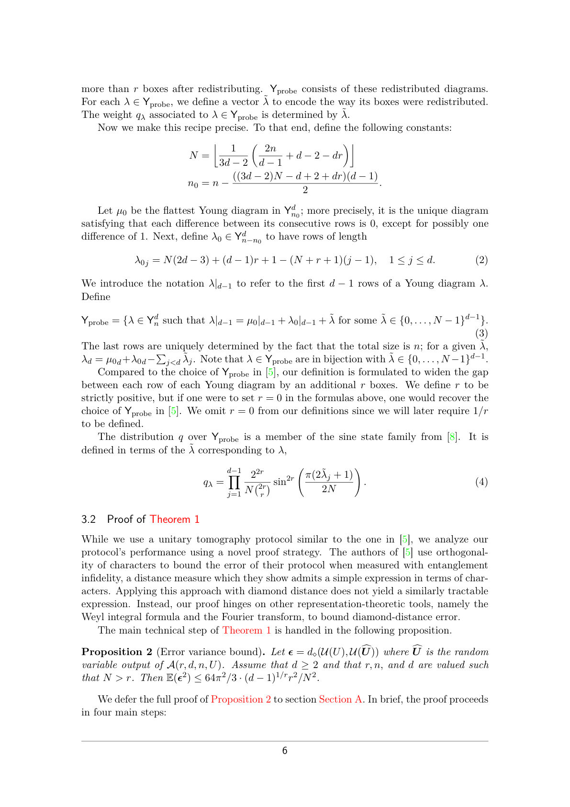
Summary. This paper develops a novel, explicit parallel circuit protocol for unitary process tomography, demonstrating that its resource requirements are nearly equivalent to the best sequential methods. By closing the gap between parallel and sequential circuit complexity up to a logarithmic factor, it significantly improves our understanding of the computational overhead for characterizing quantum gates.
Why it may be interesting. This work directly impacts the resource estimation for quantum computation, providing concrete, improved bounds for implementing quantum gates, which is fundamental to quantum information theory.
Main problem. The paper addresses the challenge of performing unitary process tomography—determining an unknown unitary gate $U$—with near-optimal query complexity.
Main result. It proves the existence of a novel parallel circuit protocol that achieves a query complexity only logarithmically worse than the best known sequential protocol, closing a major gap in resource estimation.
Method. The authors employ advanced mathematical tools, including the Weyl integral formula and Fourier analysis on the torus, to bound the error variance in the diamond distance.
Model / system. The system involves a $d$-dimensional unitary operator $U \in U(d)$ acting on a quantum system. The tomography is measured using the diamond distance, $d_{\diamond}$, which quantifies the error between the estimated and true process.
Key observables. The primary observable is the error $\epsilon = d_{\diamond}(U(U), U(c_U))$, and the complexity is measured by the required number of queries (the circuit depth/size).
Important parameters / regimes. Key parameters include the dimension $d$, the error tolerance $\epsilon$, and the parameter $r$ used to construct the parallel protocol.
Assumptions / limitations. The analysis heavily relies on the unitarily covariant nature of the diamond distance and the use of specific mathematical techniques like the Weyl integral formula and Fourier decomposition.
Paper structure. The paper establishes the problem, compares sequential vs. parallel resource bounds, and then develops the novel parallel protocol $A(r, d, n, U)$ whose error variance is bounded using Fourier analysis techniques.
Unitary process tomography is the act of learning how an unknown unitary gate acts on a quantum system. It is an essential procedure for realizing a functioning quantum computer. As quantum technologies develop, it is important to understand the computational resources needed to conduct unitary process tomography using a variety of types of circuits. In particular, when measuring error in diamond distance, it is known how to achieve optimal query complexity using a sequential circuit architecture, but it had not been known whether a parallel circuit architecture could achieve the same optimal query complexity. In this work, we prove that unitary process tomography with near-optimal query complexity is indeed possible using a parallel circuit by introducing an explicit, novel parallel procedure. This closes the gap between sequential and parallel circuits up to a logarithmic factor, showing that parallel and sequential strategies are nearly equally capable for this task.
Authors: Jingyao Wang, Yanqiao Wang, Bowen Li, Jin-Peng Liu, Zhengfeng Ji
Type: theory · Category: quantum information and computing · PDF: https://arxiv.org/pdf/2609.37207v1
Analysis basis: full PDF text, analyzed in chunks
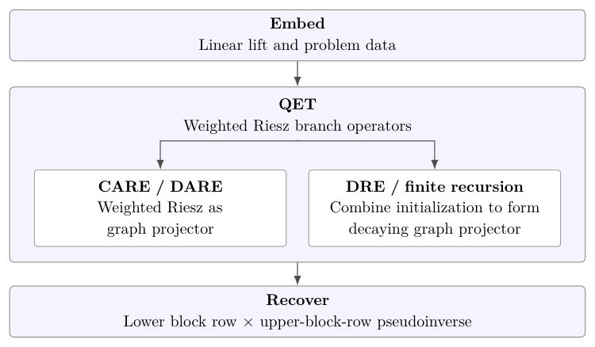
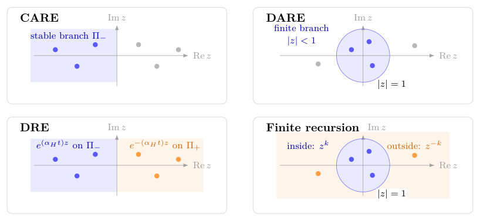
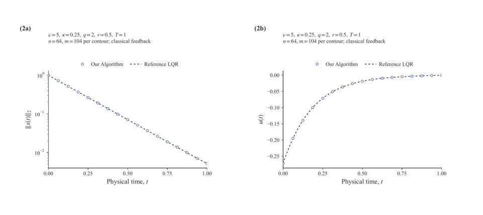

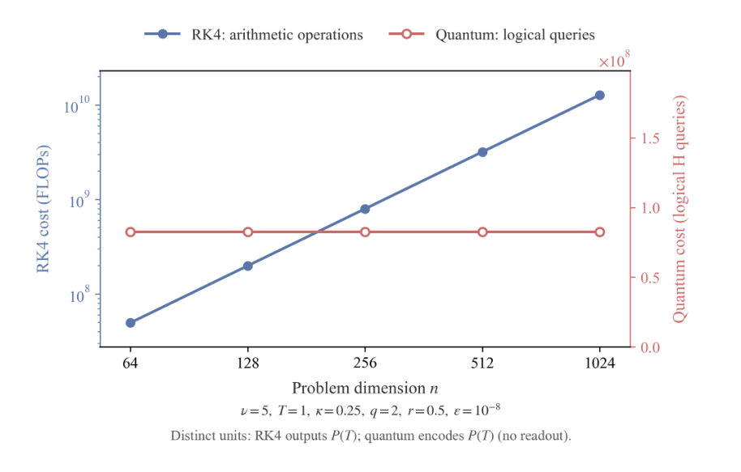
Summary. This paper presents quantum algorithms to efficiently compute the solution matrices for various Riccati equations, which are crucial in fields like optimal control and quantum chemistry. The authors achieve near-optimal query complexity bounds and rigorously prove that solving certain instances of these equations is BQP-hard. This work bridges advanced mathematical physics problems with the theoretical limits of quantum computation.
Why it may be interesting. While the application is in physics (LQR, RPA), the core contribution is establishing computational complexity (BQP-hardness) for solving fundamental equations arising in quantum dynamics, which is highly relevant to quantum information theory.
Main problem. Developing quantum algorithms to construct block-encodings of solution matrices for various Riccati equations (CAREs, DAREs, DREs, and finite recursions).
Main result. The algorithms achieve near-optimal query complexity for CAREs and DAREs, and the problem of encoding solutions for certain Riccati equations is proven to be BQP-complete.
Method. The core method is the Quantum Weighted Riesz Method, which involves embedding the problem, constructing a graph projector via weighted Riesz operators (QET), and recovering the solution matrix.
Model / system. The mathematical model is the set of Riccati equations (CARE, DARE, DRE), which arise in optimal control (LQR) and quantum chemistry (RPA). The quantum computation is framed around constructing the block-encoding of the solution matrix $P$.
Key observables. Solution matrices $P$, query complexity $Q$, generalized singularity factor $\mathcal{R}$, and initialization conditioning factor $\kappa_{ ext{init}}$.
Important parameters / regimes. Spectral separation ($\mathcal{R}$), output normalization ($\alpha$), and initialization/output scales.
Assumptions / limitations. The analysis relies on stated access and normalization assumptions, and the lower bounds are established for specific input-oracle families.
Figures summary. Figure 1 illustrates the Quantum Weighted Riesz Method pipeline (Embed $ ightarrow$ QET $ ightarrow$ Recover) for various Riccati problems. Other figures detail spectral branches and weights.
Paper structure. The paper develops the quantum algorithm framework, analyzes the query complexity bounds by establishing lower bounds, and culminates in proving BQP-completeness for specific Riccati problem instances.
We develop quantum algorithms that construct block-encodings of solution matrices for continuous- and discrete-time algebraic Riccati equations (CAREs and DAREs), differential Riccati equations (DREs), and finite Riccati recursions. The Quantum Weighted Riesz Method, unifying four kinds of Riccati problems, constructs projectors onto the solution graphs using weighted Riesz branching operators and recovers the solution matrices. Under the stated access and normalization assumptions, our algorithms for CAREs and DAREs have near-optimal query complexity $Θ(\mathcal Rα)$ up to logarithmic factors, with the generalized singularity factor $\mathcal R$ that reflects spectral separation, and the output normalization $α$. For DREs and finite-horizon problems, the query complexity has an additional initialization conditioning factor $κ_{\rm init}$. We establish product query lower bounds for specified input-oracle families, demonstrating necessary joint dependence on spectral separation and initialization or output scale. We also prove that selected-value promise problems are BQP-complete on explicit circuit-generated families of single-control discrete-time algebraic and zero-terminal differential Riccati equations. Applications include classical feedback evaluation for linear-quadratic control, a query-complexity comparison for stable random-phase approximation Riccati equations in quantum chemistry, and heated boundary control with numerical validation.
Authors: Aikaterini Mandilara, Antonia Tsili, Dimitris Syvridis, Konstantinos Christodoulopoulos
Type: theory · Category: quantum information and computing · PDF: https://arxiv.org/pdf/2609.37206v1
Analysis basis: full PDF text, analyzed in chunks
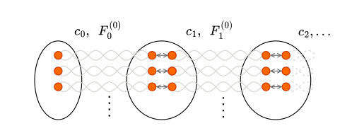
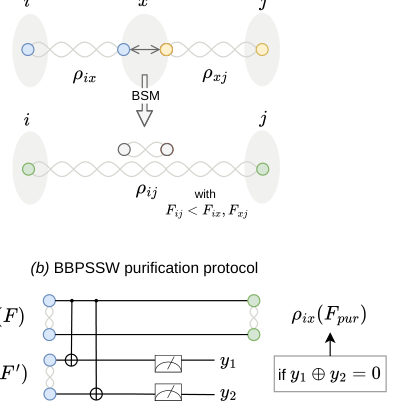
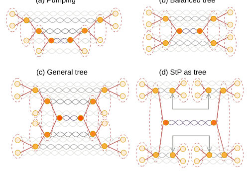
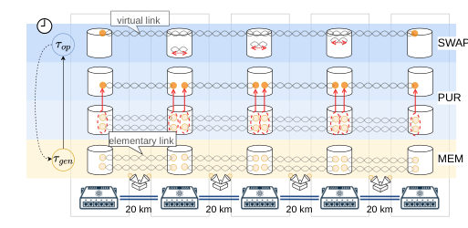
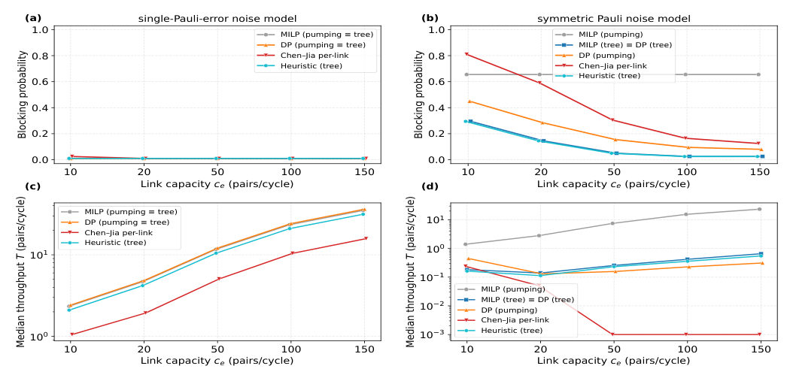
Summary. This work tackles the complex problem of optimizing entanglement routing in quantum repeaters by relaxing previous constraints on operation order and purification scheduling. By developing advanced optimization frameworks, the authors prove that the purification schedule, rather than the sequence of operations, is the primary determinant of achievable network throughput. This advances the theoretical understanding of scalable quantum communication networks.
Why it may be interesting. It provides rigorous, exact optimization tools (MILP/DP) for resource management in quantum networks, which is crucial for scaling quantum communication infrastructure.
Main problem. The paper aims to find the optimal strategy for maximizing the expected end-to-end throughput of entanglement across a quantum repeater chain while maintaining a required fidelity threshold.
Main result. The purification schedule is the dominant factor governing feasibility, as a free operation order can only increase feasibility but not the throughput beyond what the schedule dictates.
Method. The authors develop a unified optimization framework using both Mixed-Integer Linear Programming (MILP) for fixed operation orders and Dynamic Programming (DP) for arbitrary operation orders.
Model / system. The system modeled is a linear quantum repeater chain where entanglement is distributed via entanglement swapping and probabilistic purification protocols (like BBPSSW).
Key observables. Expected end-to-end throughput ($T$), fidelity ($F$), and the feasibility of the entanglement link.
Important parameters / regimes. Finite link capacities ($c_e$), baseline link fidelities ($F^{(0)}_e$), and the fidelity threshold ($F_{th}$).
Assumptions / limitations. The analysis is primarily restricted to linear repeater chains and assumes specific noise models (e.g., symmetric Pauli noise).
Figures summary. Figure 1 schematically illustrates the linear quantum repeater chain, showing elementary links, baseline fidelities, and capacities.
Paper structure. The paper first establishes the physical model and limitations of prior work, then develops the unified optimization framework using MILP and DP, and finally proves key results comparing the impact of operation order versus purification schedule.
Entanglement routing establishes entangled pairs between distant nodes of a quantum network by purifying and swapping pairs generated on elementary links. Existing methods typically restrict the decision space along two axes: the operation order, often fixed to purify-then-swap (PtS), and the purification schedule of each link, often restricted to pumping. Focusing on linear repeater chains with finite link capacities, we relax both restrictions and study the maximization of the expected end-to-end throughput subject to a fidelity threshold under two quantum-noise models. We develop a unified capacity-aware optimization framework comprising an exact mixed-integer linear program (MILP) under PtS, instantiated with either pumping or general tree purification schedules, and an exact dynamic program (DP) over arbitrary operation orders. Under symmetric Pauli noise, we prove that pumping converges to a fidelity strictly below unity, imposing a capacity-independent feasibility bound and a maximum chain length on every pumping-based PtS method, whereas general tree schedules yield a capacity-dependent bound. We further prove that post-swap purification never increases the throughput, so a free operation order can only increase feasibility. Numerical evaluations confirm the bounds: tree schedules serve over 90\% of the requests that pumping cannot at moderate fidelity thresholds; within the pumping class, a free operation order recovers much of this advantage; but once links use tree schedules, the tree-based MILP and the order-exact DP serve identical request sets throughout. Operation order and purification schedule are thus substitutes, with the purification schedule the dominant factor governing feasibility under symmetric Pauli noise.
Authors: Srinivasan Arunachalam, Amin Shiraz Gilani, Nikhil S. Mande
Type: theory · Category: quantum information and computing · PDF: https://arxiv.org/pdf/2609.38073v1
Analysis basis: full PDF text, analyzed in chunks
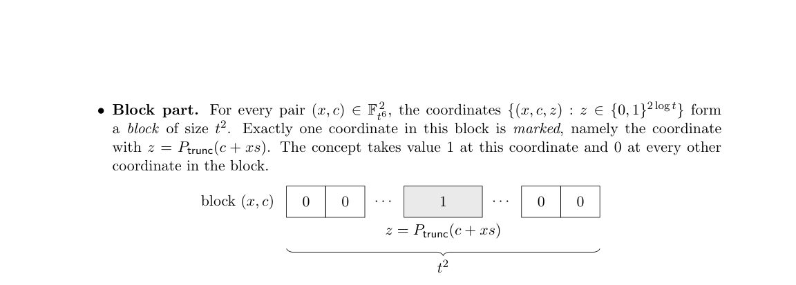
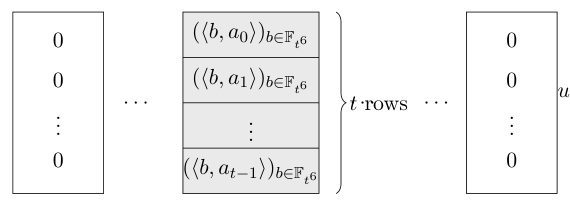
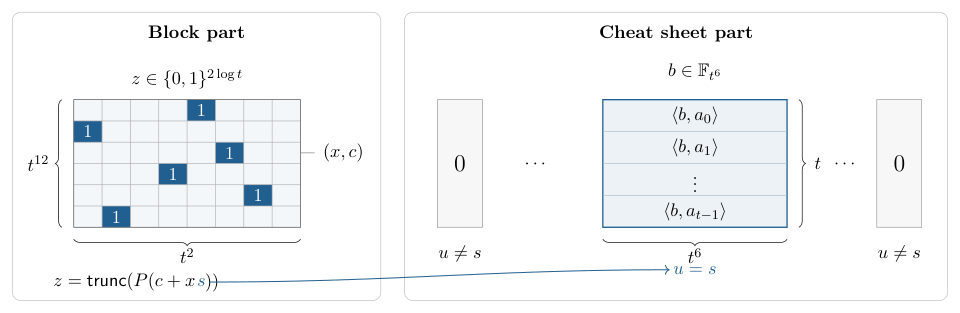
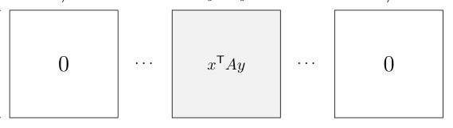
Summary. This paper rigorously studies the separation between classical, randomized, and quantum query complexities for learning concepts. By constructing specific concept classes, the authors disprove a long-standing conjecture relating randomized and quantum query bounds. This work demonstrates that quantum speedups in learning can exceed those predicted by simple Grover or Bernstein-Vazirani type analyses.
Why it may be interesting. The work provides fundamental theoretical tools for understanding the limits of quantum computation in information processing tasks, which underpins the theoretical understanding of quantum algorithms.
Main problem. The paper investigates the optimal relationship between deterministic, randomized, and quantum query complexities for exact learning with membership queries.
Main result. It refutes the conjecture $R(\mathcal C)=O(\mathsf{Q}(\mathcal C)^2+\mathsf{Q}(\mathcal C)\log N)$ by constructing concept classes where the randomized complexity scales significantly faster than predicted by the quantum complexity.
Method. The authors use sophisticated adversary arguments and constructive proofs based on bilinear forms and polynomial structures to establish lower bounds on query complexity, contrasting them with upper bounds derived from quantum algorithms like amplitude amplification.
Model / system. The model is the theoretical setting of exact learning for concept classes $\mathcal C \subseteq \{0, 1\}^N$, analyzed through the lens of query complexity measures ($D, R, Q$). The constructions involve concepts defined over finite fields using bilinear forms or polynomial structures.
Key observables. Deterministic query complexity $D(\mathcal C)$, Randomized query complexity $R(\mathcal C)$, and Quantum query complexity $Q(\mathcal C)$.
Important parameters / regimes. The size of the domain $N$, and the complexity parameters $q$ or $t$ used in the specific constructions.
Assumptions / limitations. The separation results are non-trivial only when the quantum query complexity $Q(\mathcal C) = \omega(1)$.
Figures summary. Figure 1 illustrates a concept class based on a bilinear form, showing a marked address within a block. Figure 2 illustrates a concept class involving a 'Block part' and a 'Cheat-sheet part' related to polynomial coefficients.
Paper structure. The paper proceeds by first establishing separations using specific constructions (e.g., bilinear forms) to refute the randomized/quantum conjecture. It then explores related theoretical bounds by analyzing various information-theoretic parameters ($\gamma, ext{ETD}$) and relating them to query complexity bounds.
We study exact learning with membership queries for concept classes $\mathcal C\subseteq\{0,1\}^N$, focusing on the relationships among their deterministic, randomized, and quantum query complexities, denoted $\mathsf{D}(\mathcal C)$, $\mathsf{R}(\mathcal C)$, and $\mathsf{Q}(\mathcal C)$, respectively. The two canonical quantum speedups in this model are witnessed by Grover search and Bernstein-Vazirani, leading to the longstanding conjecture $$ \mathsf{R}(\mathcal C)=O(\mathsf{Q}(\mathcal C)^2+\mathsf{Q}(\mathcal C)\log N). $$ We first refute this conjecture by constructing concept classes $\mathcal C$ and $\mathcal C'$ satisfying \[ \mathsf{R}(\mathcal C)=Ω\!\left(\frac{\mathsf{Q}(\mathcal C)^3\log N}{\log \mathsf{Q}(\mathcal C)}\right) \qquad\text{and}\qquad \mathsf{D}(\mathcal C')=Ω(\mathsf{Q}(\mathcal C')^3\log N). \] The first bound matches the upper bound of Arunachalam et al.~[Quantum'21] up to constant factors, while the second matches the upper bound of Servedio and Gortler~[SICOMP'04]. In particular, this shows that the saving in the randomized upper bound of Arunachalam et al. fundamentally relies on randomness. Apart from characterizing the optimal relationship between classical and quantum query complexity, our results are the first to show that quantum speedups for learning can go beyond the Grover and Bernstein-Vazirani paradigms.
Authors: Aritra Banerjee, Reetik Jangir, Rishant Sharma
Type: theory · Category: other · PDF: https://arxiv.org/pdf/2609.35990v1
Analysis basis: full PDF text, analyzed in chunks
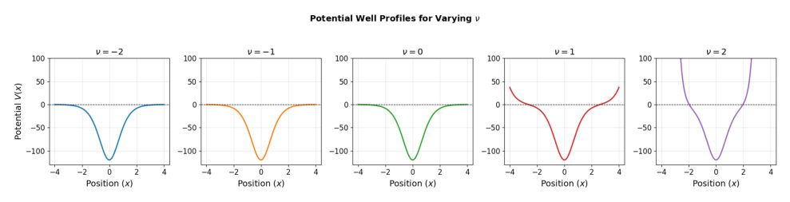
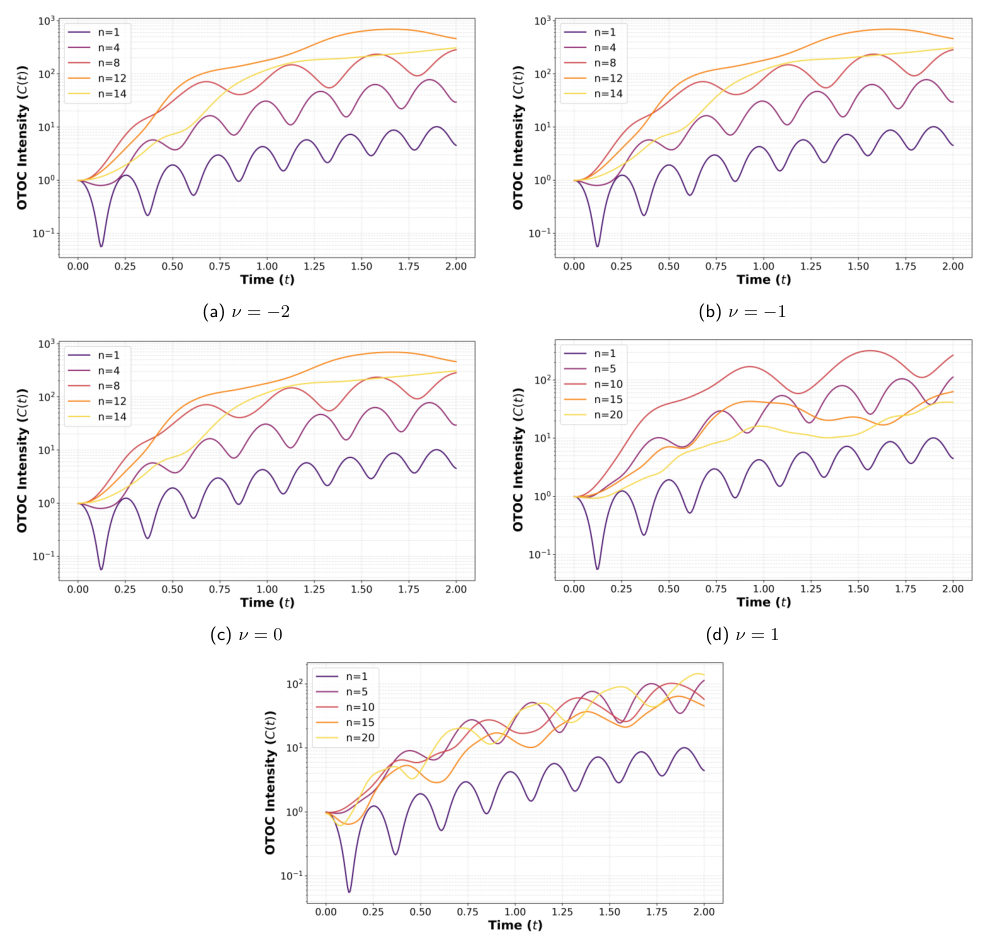
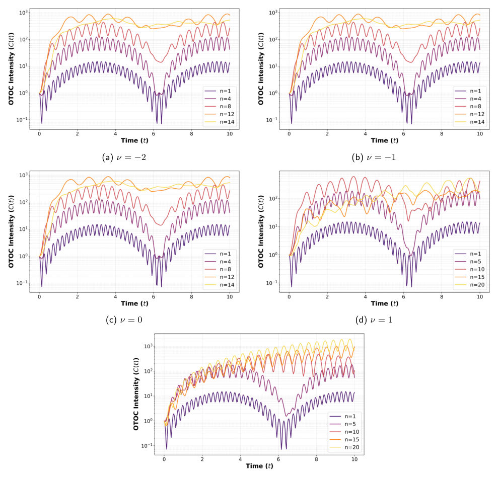
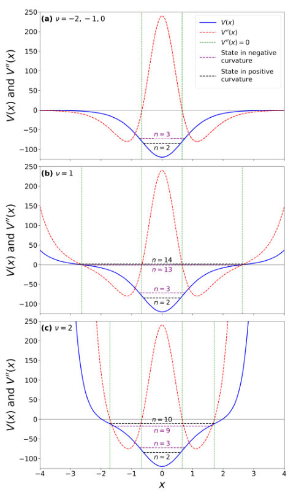
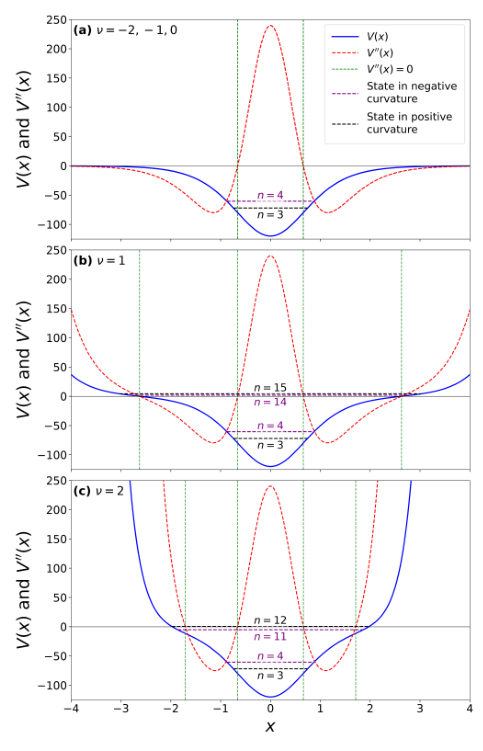
Summary. This paper analyzes the Out-of-Time-Order Correlator (OTOC) for the generalized Volcano potential, a model capable of exhibiting diverse potential behaviors. The authors demonstrate that the initial exponential growth of the OTOC, often associated with quantum chaos, is not a global indicator but rather a signature linked to the excited states sampling regions of negative potential curvature. This provides a refined diagnostic tool for understanding quantum dynamics in complex potentials.
Why it may be interesting. The work connects a fundamental measure of quantum chaos (OTOC) to the local geometry (curvature) of the underlying potential, providing a nuanced understanding of when local instability predicts observable scrambling signatures.
Main problem. The paper investigates the Out-of-Time-Order Correlator (OTOC) as a diagnostic tool to characterize quantum information scrambling and the nature of quantum chaos in specific physical potentials.
Main result. The short-time exponential growth of the OTOC does not universally signal global quantum chaos; instead, it is shown to correlate specifically with the sampling of negative curvature regions within the potential.
Method. The study employs a combination of analytical derivations, numerical diagonalization (using DVR), and semiclassical analysis to compute the OTOC for the generalized Volcano potential.
Model / system. The system is modeled by a particle governed by the Schrödinger equation with the 'Volcano potential,' $V(x) = -(\alpha_1 \cosh^{2 u} x + \alpha_2 ext{sech}^2 x)$, which interpolates between various potential shapes, including the Pöschl-Teller case.
Key observables. The Out-of-Time-Ordered Correlator (OTOC), $C_n(t)$, which quantifies the growth of an initially localized operator under time evolution.
Important parameters / regimes. The potential parameter $ u$, and the potential coefficients $\alpha_1$ and $\alpha_2$, which dictate the potential's asymptotic behavior and curvature.
Assumptions / limitations. The analysis relies on projecting calculations onto the bound state manifold for analytic tractability and uses finite-grid discretization for numerical computations.
Figures summary. Figures qualitatively show the profiles of the Volcano potential for different $ u$ and illustrate the calculated OTOC values for various parameter regimes.
Paper structure. The paper is structured to introduce the potential, detail the OTOC computation, analyze the dependence on potential curvature, provide a detailed analysis of the exactly solvable Pöschl-Teller case, discuss implications for braneworlds, and conclude.
The out-of-time-order correlator (OTOC) has emerged as an important diagnostic for quantum information scrambling and a key signature of quantum chaos. In this work, we discuss out-of-time-order correlators, analytically and numerically, for the so-called Volcano potentials. This family of potentials parametrically interpolates between bounded wells and confining walls, and includes Pöschl-Teller as a specific case. Through a combination of numerical diagonalization and semiclassical analysis, we investigate various regimes of the potential parameter regimes containing regions of both positive and negative curvatures. Moreover, we demonstrate in this case that short-time exponential growth of the OTOC does not necessarily signal global quantum chaos; instead, it correlates with the sampling of negative curvature regions by excited states.
Authors: Nicolai Peder Bülow Pedersen, Jakob Kaltoft Søndergaard, Jaron Skovsted Gundersen, René Bødker Christensen, Petar Popovski
Type: theory · Category: quantum information and computing · PDF: https://arxiv.org/pdf/2609.36273v1
Analysis basis: full PDF text, analyzed in chunks
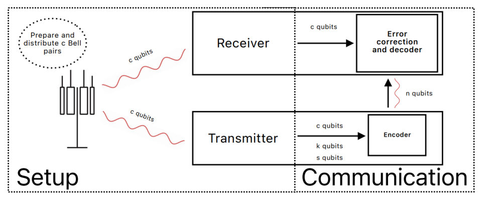
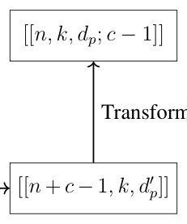
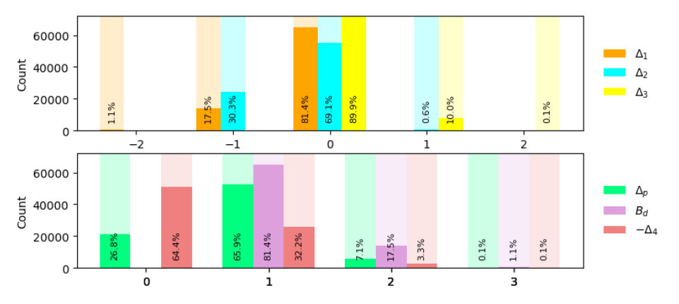
Summary. This paper develops a resource-aware puncturing technique for entanglement-assisted quantum error-correcting codes. By adapting existing puncturing methods, the authors show how to reduce the required shared Bell pairs by one while maintaining the code's error-correcting distance. This is vital for building practical quantum communication systems with limited entanglement resources.
Why it may be interesting. This work provides a concrete, systematic method for optimizing quantum resource usage in QEC, which is crucial for scaling up quantum communication protocols that rely on shared entanglement.
Main problem. The paper addresses the need for resource-aware quantum error-correcting codes that can adapt their structure when the availability of pre-shared entanglement (Bell pairs) is intermittent.
Main result. A novel three-step puncturing procedure was developed to extend puncturing constructions from standard stabilizers to entanglement-assisted codes, successfully reducing Bell pair requirements by one while preserving logical qubits and demonstrating distance preservation in most random cases.
Method. The method involves interpreting the EAQECC as an unassisted stabilizer, applying a standard puncturing procedure to a receiver-side qubit, and then recovering the entanglement-assisted representation.
Model / system. The study focuses on Quantum Error-Correcting Codes (QECCs), specifically Entanglement-Assisted Stabilizer Codes (EAQECCs), which use pre-shared Bell pairs to enhance error correction capabilities.
Key observables. Code distance ($d$), number of logical qubits ($k$), number of physical qubits ($n$), and the required number of Bell pairs ($c$).
Important parameters / regimes. The fidelity ($F$) of the shared Bell pairs, and the specific structure of the puncturing map applied to the receiver-side qubits.
Assumptions / limitations. The analysis assumes the shared Bell pairs are perfect ($F=1$), and the puncturing procedure is restricted to the receiver's halves of the shared pairs.
Figures summary. Figures illustrate the communication framework for EAQECCs and show histograms analyzing the distance loss ($\Delta_i$) across various puncturing scenarios, confirming distance preservation in a high percentage of cases.
Paper structure. The paper builds from the general theory of stabilizer codes and puncturing, extends this theory to the entanglement-assisted setting via a three-step procedure, derives mathematical bounds on distance loss, and concludes with extensive statistical analysis on randomly generated codes.
Quantum error-correcting codes are essential for reliable quantum communication. The achievable parameters can be improved by using entanglement-assisted stabilizers at the cost of consuming pre-shared Bell pairs. If the availability of such Bell pairs is intermittent, the ability to adapt the code to available resources is beneficial. That is, to pick a single mother code that can be adapted to different entanglement budgets. To achieve this, we extend an existing puncturing construction for standard/unassisted stabilizers to the entanglement-assisted setting through a three-step procedure: Interpreting the code as an unassisted stabilizer, puncturing a receiver-side qubit, and recovering an entanglement-assisted representation. This procedure reduces the number of required Bell pairs by one while preserving the number of transmitted and logical qubits. We derive a bound on the resulting distance loss and establish conditions for preserving the original code distance. Finally, we analyse distinct, randomly generated, entanglement-assisted stabilizers with five to eight transmitted qubits. Of these codes, 14.75% have a greater distance than their associated unassisted representations. Among this subset, 81.4% admit at least one puncturing choice that preserves the original entanglement-assisted distance. These results illustrate how puncturing can reduce entanglement requirements while maintaining code distance.
Authors: Grier M. Jones, Hassan Tariq Shafi, Zixuan Wang, Thomas Trenty, Zachary Vernec, Hans-Arno Jacobsen
Type: theory · Category: quantum information and computing · PDF: https://arxiv.org/pdf/2609.36266v1
Analysis basis: full PDF text, analyzed in chunks
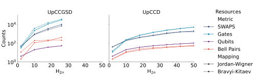
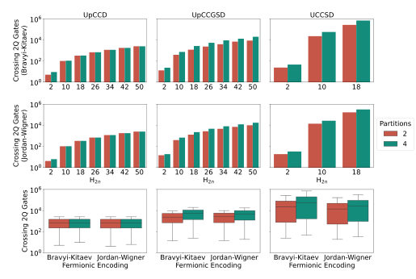
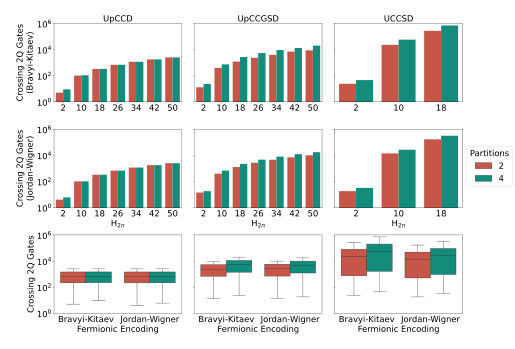
Summary. This work quantifies the resource overhead required to run quantum chemistry simulations using Coupled-Cluster methods on distributed quantum hardware. By comparing naive circuit partitioning against the optimized TeleSABRE algorithm, the authors determine that UpCCD is the most resource-efficient ansatz. The findings are critical for understanding the scaling limitations of quantum algorithms on modular quantum processors.
Why it may be interesting. It provides concrete, quantitative metrics (Bell pairs, gate counts) for scaling quantum chemistry algorithms onto realistic, distributed hardware architectures, which is crucial for assessing the feasibility of near-term quantum computation.
Main problem. The paper estimates the distributed-resource requirements for implementing Unitary Coupled-Cluster (UCC) ansätze in the context of Distributed Quantum Computing (DQC).
Main result. The UpCCD ansatz shows the most favorable scaling for distributed resources, significantly outperforming UCCSD, and the TeleSABRE algorithm substantially reduces required Bell pairs compared to naive distribution methods.
Method. The authors compare a naive circuit partitioning approach against the optimized TeleSABRE algorithm to quantify the cost of nonlocal two-qubit gates, reporting costs in Bell pairs and classical communication.
Model / system. The focus is on quantum chemistry calculations using UCC ansätze (UCCSD, UpCCD, UpCCGSD) applied to hydrogen chains. The resource analysis is performed for two fermionic mappings: Jordan-Wigner and Bravyi-Kitaev.
Key observables. Distributed-resource requirements, quantified by Bell-pair costs and classical communication overhead for nonlocal two-qubit gates.
Important parameters / regimes. Hydrogen chain length ($H2n$), and the specific UCC ansatz used (UCCSD, UpCCD, UpCCGSD).
Assumptions / limitations. The analysis assumes an implementable gate set including arbitrary-angle rotations, and the resource estimation is limited by memory constraints for larger systems.
Figures summary. Fig. 1 compares two-qubit gates crossing partition boundaries for the three ansätze under naive partitioning. Fig. 2 shows resource estimations (SWAP, Bell pairs) vs. system size for UpCCD and UpCCGSD using TeleSABRE.
Paper structure. The paper introduces the problem of DQC for quantum chemistry, details the resource estimation methodology comparing naive vs. TeleSABRE, presents quantitative results comparing different ansätze and encodings, and concludes with scaling analysis.
Distributed quantum computing (DQC) has been proposed as a way to scale quantum algorithms for practical applications beyond monolithic quantum processor architectures. Among these applications, quantum chemistry is widely regarded as one of the most promising use cases for quantum computing. In this work, we estimate the distributed-resource requirements of unitary coupled-cluster (UCC) ansätze for quantum chemistry, focusing on unitary coupled-cluster singles and doubles (UCCSD), unitary pair coupled-cluster doubles (UpCCD), and unitary pair coupled-cluster with generalized singles and doubles (UpCCGSD) circuits for hydrogen chains. We focus on a teleportation-based approach to DQC, quantitatively comparing a naive distribution method to the output of the TeleSABRE algorithm. For both approaches, we estimate the cost of handling nonlocal two-qubit gates across a fixed midpoint or quarter-point partition, reporting Bell-pair/classical-communication costs in teleportation. Across Jordan-Wigner and Bravyi-Kitaev, we find that UpCCD with spin-blocked Jordan-Wigner ordering gives the most favorable scaling, while UCCSD incurs substantially larger distributed-resource requirements.
Authors: Simon Becker, Izak Oltman
Type: theory · Category: disordered systems and neural networks · PDF: https://arxiv.org/pdf/2609.38017v1
Analysis basis: full PDF text, analyzed in chunks
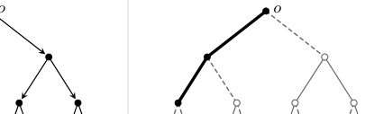
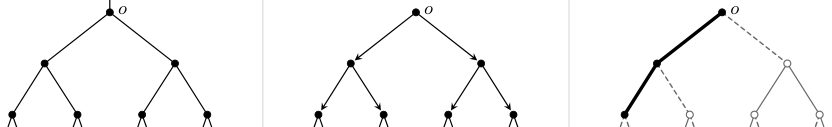
Summary. This paper rigorously analyzes quantum percolation on regular trees, proving that the threshold for infinite cluster formation ($p_c$) is strictly lower than the threshold for the appearance of an absolutely continuous spectrum ($p_{ac}$). The methodology combines advanced spectral theory, resolvent analysis, and contraction mapping arguments to establish this crucial separation in the system's spectral properties.
Why it may be interesting. This work provides a rigorous mathematical framework for understanding spectral localization in disordered quantum systems, directly addressing the quantum percolation conjecture in a highly structured setting (trees).
Main problem. The paper investigates the relationship between the onset of infinite connected components (percolation) and the appearance of extended quantum states (absolutely continuous spectrum) in random subgraphs of regular trees.
Main result. The authors prove a strict separation between the percolation threshold ($p_c$) and the threshold for the appearance of an absolutely continuous spectrum ($p_{ac}$), showing $p_c < p_{ac}$ for regular trees.
Method. The analysis heavily relies on spectral theory, specifically examining the boundary values of the resolvent operator using fixed-point equations and contraction mapping principles.
Model / system. The system is Bernoulli bond percolation on a regular tree of degree $k+1 \ge 3$. The quantum dynamics are governed by the adjacency operator $A_\omega$ acting on the graph's Hilbert space.
Key observables. Connectivity threshold ($p_c$), onset of absolutely continuous spectrum ($p_{ac}$), and the spectral measure $\mu_u(B)$ derived from the resolvent's imaginary part.
Important parameters / regimes. The degree of the tree ($k+1$), the bond retention probability ($p$), and the critical probability $p_c = 1/k$.
Assumptions / limitations. The proof requires establishing that the imaginary part of the resolvent boundary value is zero almost surely, which is achieved via contraction estimates on probability measures.
Figures summary. Figure 1 schematically illustrates the separation of regimes: $p_c = 1/k$ to $1/k + \epsilon_k$ (where no a.c. spectrum exists) and the region governed by Bordenave's theorem.
Paper structure. The paper develops the theory by first defining the spectral diagnostics, then using recursive relations for the resolvent ($\Gamma_T(z)$), establishing contraction bounds ($ ho_k < 1$), and finally proving that the imaginary part of the resolvent is zero almost surely, leading to the spectral conclusion.
For Bernoulli bond percolation on every regular tree of degree at least three, we prove that infinite clusters appear strictly before absolutely continuous spectrum. Throughout an explicit supercritical interval, the adjacency operator of every open cluster almost surely has no absolutely continuous component. Together with Bordenave's theorem, this gives $p_c
Authors: Qian Chen, Minglong Qin, Fang Song, Penghui Yao, Mingnan Zhao
Type: theory · Category: quantum information and computing · PDF: https://arxiv.org/pdf/2609.37999v1
Analysis basis: full PDF text, analyzed in chunks
Summary. This work analyzes the mixing rate of a parallel version of Kac's walk when applied to multiple orthonormal quantum states, modeling the system on the complex Stiefel manifold. The authors prove that the mixing time is bounded by $O((k + \log d) \log(d/\epsilon))$ in both Wasserstein and total variation metrics. This result generalizes previous findings by showing rapid scrambling for multiple entangled quantum states.
Why it may be interesting. The rapid mixing property of quantum random walks on structured manifolds like the Stiefel manifold is crucial for understanding quantum scrambling and the efficiency of quantum information processing protocols.
Main problem. The paper investigates the rate at which the parallel Kac's walk mixes when acting simultaneously on $k$ orthonormal quantum states.
Main result. The joint distribution of the $k$ output states mixes rapidly on the complex Stiefel manifold $V_{d,k}$ in $O((k + \log d) \log(d/\epsilon))$ steps for both Wasserstein and total variation distances.
Method. The proof utilizes coupling techniques and detailed analysis of the Jacobian of the evolution map to bound the distance between the walk's distribution and the Haar-random unitary distribution.
Model / system. The system is the parallel Kac's walk, viewed as a Markov chain on the complex Stiefel manifold $V_{d,k}$, representing an ordered collection of $k$ orthonormal quantum states in $\mathbb{C}^d$.
Key observables. Joint distribution of $k$ output states, Wasserstein distance ($W_D$), and total variation distance ($\epsilon$).
Important parameters / regimes. $k$ (number of states), $d$ (ambient dimension), $\epsilon$ (desired accuracy).
Assumptions / limitations. The analysis relies on constructing explicit couplings and establishing contraction estimates for the distance metrics on the Stiefel manifold.
Paper structure. The paper develops the analysis by first establishing Wasserstein mixing bounds using contraction estimates, followed by constructing a coupling argument to prove the total variation mixing time.
Kac's walk is a classical local random walk whose action on a single real unit vector in dimension $d$ mixes in total variation in $Θ(d\log d)$ sequential steps~\cite{PS17}. Lu, Qin, Song, Yao, and Zhao introduced a parallel version of Kac's walk that mixes a single quantum state in $O(\log d)$ rounds~\cite{LQSY+26}. After discretizing the randomness and replacing it by suitable pseudorandom primitives, this parallel walk gives rise to pseudorandom state scramblers, and was subsequently shown to yield pseudorandom unitaries~\cite{LQSY+25}. We study what happens when the parallel Kac's walk acts simultaneously on $k$ orthonormal quantum states. We prove that, for any $1\leq k < d$, after $O\!\left((k+\log d)\log(d/\varepsilon)\right)$ steps, the joint distribution of the $k$ output states is $\varepsilon$-close, in both Wasserstein and total variation distance, to that obtained by applying a common Haar-random unitary to the same inputs. This generalizes the dispersing property of the parallel Kac's walk from a single quantum state to multiple orthonormal quantum states. Equivalently, viewing an ordered collection of $k$ orthonormal states as a point on the complex Stiefel manifold $V_{d,k}=\{X\in\mathbb C^{d\times k}:X^\dagger X=I_k\}$, we show that the parallel Kac's walk mixes rapidly on $V_{d,k}$, with both Wasserstein and total variation mixing times bounded by $O\!\left((k+\log d)\log(d/\varepsilon)\right)$. This extends the Wasserstein mixing result of Pillai, Smith, and Vaikuntanathan for the standard Kac's walk on real Stiefel manifolds~\cite{PSV26}.
Authors: Evgeny Shchukin, Peter van Loock
Type: theory · Category: quantum information and computing · PDF: https://arxiv.org/pdf/2609.36336v1
Analysis basis: full PDF text, analyzed in chunks
Summary. This paper establishes a separability rigidity theorem for Gaussian quantum states, showing that if a Gaussian state dominates a separable operator, the state itself must be separable. The authors prove this using advanced tools from phase-space analysis, demonstrating that for Gaussian states, full inseparability and genuine multipartite entanglement are equivalent concepts.
Why it may be interesting. The work provides powerful mathematical tools (phase-space analysis, Hessian bounds) to characterize entanglement in a highly structured class of quantum states (Gaussian states), which are common in quantum optics and continuous variable quantum information.
Main problem. The paper proves a separability rigidity theorem for finite-mode Gaussian states, determining when the domination of a separable operator by a Gaussian state implies the Gaussian state itself is separable.
Main result. The core result is that for Gaussian states, the domination of a separable operator implies the state is separable across the corresponding partition, leading to the conclusion that full inseparability and genuine multipartite entanglement coincide for these states.
Method. The proof heavily utilizes the characteristic function and the Husimi function in phase space, deriving key inequalities involving the Hessian of the logarithm of the Husimi function to establish the required bounds.
Model / system. The system under study is finite-mode quantum states, specifically restricted to Gaussian states ($ ho_G$). The analysis is performed using quadratures and covariance matrices, focusing on entanglement properties defined by separability across partitions.
Key observables. Husimi function ($q_T(r)$), Logarithmic Hessian ($ abla^2 \log q_T(r)$), Covariance matrix ($\gamma$), and the characteristic function ($\chi_ ho(\xi)$).
Important parameters / regimes. The number of modes ($n$), the partition structure ($\mathcal{I}$), and the approximation parameter $\epsilon$ used in the limiting processes.
Assumptions / limitations. The main theorem is a one-way implication (domination $\implies$ separability), and the analysis relies on the trace-norm continuity of Husimi derivatives and finite-mixture approximations.
Figures summary. The notes describe constructions involving Gaussian states on 3 qubits ($ au_3$) decomposed into mixtures of states ($\sigma_+, \sigma_-$) that violate known biseparability inequalities.
Paper structure. The paper builds from establishing foundational inequalities relating the Hessian of the Husimi function to separable operators (Proposition 1), progressing to proving the main rigidity theorem, and concluding with explicit constructions demonstrating the equivalence of entanglement measures for Gaussian states.
We prove a separability rigidity theorem for finite-mode Gaussian states. Let $ρ_G$ be Gaussian and let $\mathcal I$ be a fixed partition of the modes. If $ρ_G$ dominates a nonzero positive operator $T$ that is separable across $\mathcal I$, $0\neq T\preccurlyeq ρ_G$, then $ρ_G$ itself is separable across $\mathcal I$. The dominated operator is arbitrary and need not be Gaussian. As consequences, convex mixing among finitely many separability partitions creates no new Gaussian states: a Gaussian state belonging to such a convex class is already separable across one fixed partition. In particular, full inseparability and genuine multipartite entanglement coincide for finite-mode Gaussian states, and identical copies of a biseparable Gaussian state cannot activate genuine multipartite entanglement. We also show that the implication cannot be reversed by constructing a fully separable Gaussian state that dominates a positive multiple of a genuine multipartite entangled state.
Authors: Alexandros Vasilopoulos, Zeynep Demir Vatansever, Erol Vatansever, Gerard T. Barkema, Nikolaos G. Fytas
Type: theory · Category: statistical mechanics · PDF: https://arxiv.org/pdf/2609.36886v1
Analysis basis: full PDF text, analyzed in chunks
Summary. This paper examines the critical behavior of the site-diluted Ising model on the kagome lattice, comparing static and dynamic universality. While static exponents remain robustly fixed to pure Ising values, the dynamic exponent $z$ shows lattice-dependent deviations in the diluted regime. The authors argue these differences stem from finite-size crossovers rather than a failure of dynamic universality.
Why it may be interesting. The comparison of dynamic critical exponents across different lattices and the identification of crossover effects versus true universality breakdown are fundamental questions in critical phenomena, relevant to understanding complex many-body dynamics.
Main problem. The study investigates the difference between static and dynamic universality classes in the site-diluted Ising model on the kagome lattice, comparing its behavior to the square lattice.
Main result. Static critical exponents retain their pure Ising values across all dilutions, while the dynamic exponent $z$ differs between the two lattices in the diluted regime, attributed to finite-size crossover effects rather than a breakdown of dynamic universality.
Method. The research employs Monte Carlo simulations using the Wolff single-cluster algorithm to calculate equilibrium and dynamic critical properties.
Model / system. The system is the site-diluted Ising model defined by the Hamiltonian $H = -\sum_{\langle ij angle} \epsilon_i \epsilon_j \sigma_i \sigma_j$ on the kagome lattice. The dilution is controlled by the spin concentration $p$.
Key observables. Static critical exponents ($ u$, $\gamma/ u$), dynamic critical exponent ($z$), specific heat ($C^$), and magnetic susceptibility ($\chi^$).
Important parameters / regimes. Spin concentration $p$, lattice geometry (kagome vs. square), and temperature $T$ relative to the critical temperature $T_c$.
Assumptions / limitations. The analysis assumes that the difference in $z$ between lattices in the diluted regime is due to finite-size crossover effects related to different percolation thresholds, not a fundamental breakdown of dynamic universality.
Figures summary. Figures show scaling of Binder cumulant and susceptibility for pure and diluted models, and the paper references comparisons of dynamic exponents ($z_{ ext{eff}}$) versus system size $L$.
Paper structure. The paper analyzes static results first, confirming the retention of pure Ising exponents. It then moves to dynamic properties, comparing the behavior of the dynamic exponent $z$ on the kagome and square lattices as a function of dilution $p$, concluding with an RG flow interpretation.
We study the site-diluted Ising model on the kagome lattice using the Wolff single-cluster algorithm, focusing on both equilibrium and dynamic critical properties. The equilibrium critical exponents $ν= 1$ and $γ/ν= 7/4$ retain their exact pure Ising values for all spin concentrations $p$ considered, consistent with the marginal irrelevance of disorder at $α= 0$, with the specific heat crossing over from logarithmic to double-logarithmic growth upon dilution. These static results are shared between the kagome and square lattices. On the dynamic side, $z$ decreases upon dilution on both lattice, opposite to what is observed under local dynamics, with evidence of saturation to a $p$-independent value at strong dilution, suggesting a diluted dynamic fixed point. While $z$ is consistent between the two lattices in the pure case, it differs in the diluted regime, an effect we attribute to the two lattices sitting at different positions along the renormalization-group flow between the Ising and percolation fixed points, rather than to a true asymptotic breakdown of dynamic universality.
Authors: Alessandro Chiesa, Zihan Hu
Type: theory · Category: other · PDF: https://arxiv.org/pdf/2609.37429v1
Analysis basis: full PDF text, analyzed in chunks
Summary. This paper achieves a major theoretical breakthrough by constructing the first succinct argument for QMA in the Quantum Random Oracle Model (QROM) using only unstructured hardness. It extends the classical commit-and-open paradigm to the quantum setting via a novel transformation of Quantum Interactive Oracle Proofs. This result significantly advances the understanding of verifiable quantum computation complexity.
Why it may be interesting. While highly theoretical, the development of robust, unconditionally secure quantum cryptographic primitives like these commitments and arguments is foundational for any advanced quantum information theory work.
Main problem. The core problem is constructing succinct arguments for QMA (Quantum Merlin-Arthur) in the Quantum Random Oracle Model (QROM) without relying on unproven conjectures or structured hardness assumptions.
Main result. The authors construct the first such succinct argument for QMA in the QROM, demonstrating that unstructured hardness alone suffices for this purpose.
Method. The method involves a general, efficiency-preserving transformation that compiles Quantum Interactive Oracle Proofs (QIOPs) into quantum arguments (QARGs) using a quantum analogue of the classical commit-and-open paradigm.
Model / system. The theoretical setting is the Quantum Random Oracle Model (QROM). The proof framework involves compiling QIOPs, which are interactive generalizations of quantum PCPs, into arguments.
Key observables. Communication complexity, soundness error, and the probability difference between simulation and extraction worlds.
Important parameters / regimes. The complexity is shown to be poly(lambda, log nu), where lambda and nu are related to the security parameters.
Assumptions / limitations. The result relies on the QROM and the construction of extractable vector commitments for quantum states with local openings.
Paper structure. The paper develops the necessary quantum commitment schemes (QSVC) first, followed by the transformation that compiles QIOPs into QARGs, and finally, the analysis bounding the probability difference between simulation and extraction worlds.
Succinct arguments are a fundamental cryptographic primitive for verifying computational claims with small communication. In the classical setting, succinct arguments for NP can be constructed from unstructured hardness alone (e.g., hash functions) by compiling probabilistically checkable proofs (PCPs) or interactive oracle proofs (IOPs) for NP via the commit-and-open paradigm. In contrast, known succinct arguments for QMA rely on ``structured'' cryptographic primitives, or on the quantum PCP conjecture. We construct the first succinct argument for QMA in the quantum random oracle model (QROM) without relying on additional cryptographic assumptions or unproven conjectures. This yields succinct arguments for QMA from unstructured hardness alone, showing that ideal hash functions not only suffice for succinct arguments for NP but also for QMA. Underlying our result is an efficiency-preserving transformation that compiles quantum interactive oracle proofs (QIOPs), a recently introduced interactive generalization of quantum PCPs, into quantum arguments for the same language, via a natural quantum commit-and-open paradigm. Our transformation applies to every QIOP with public-query soundness, a notion that we formalize to capture a natural requirement of the commit-and-open paradigm and is satisfied by a known QIOP for QMA. As a key ingredient in our transformation, we formalize and construct extractable vector commitments for quantum states with local openings in the QROM, which may be of independent interest.
Authors: Hao-Chung Cheng, Christoph Hirche, Marco Tomamichel
Type: theory · Category: quantum information and computing · PDF: https://arxiv.org/pdf/2609.38144v1
Analysis basis: full PDF text, analyzed in chunks
Summary. This paper rigorously determines the exact strong converse exponent for secret-key quantum communication over arbitrary quantum wiretap channels. It achieves this by introducing and analyzing a novel Rényi private information measure. The result provides a fundamental, rate-achieving bound for how fast the fidelity must decay when the transmission rate exceeds the private capacity.
Why it may be interesting. While focused on quantum information theory, the rigorous mathematical techniques involving information measures (like Rényi entropy generalizations) and rate-distortion theory are highly relevant to understanding the fundamental limits of quantum communication protocols.
Main problem. The paper determines the exact strong converse exponent for private communication (secret-key transmission and generation) over general finite-dimensional quantum wiretap channels.
Main result. The strong converse exponent is characterized by a formula involving the regularized Rényi private information, establishing an exact rate limit for secure communication.
Method. The authors introduce a novel Rényi private information and use it to derive both one-shot and asymptotic converse bounds, which are shown to match the achievability bounds.
Model / system. The analysis focuses on unassisted transmission over a fixed finite-dimensional memoryless joint quantum wiretap channel $W: A ightarrow BE$, where $B$ is the legitimate receiver's output and $E$ is the eavesdropper's output.
Key observables. Private Capacity $P(W)$, squared fidelity $F(C; W)$, and the strong converse exponent $ ext{Esc}(W, R)$.
Important parameters / regimes. The Rényi order $\alpha > 1$, the transmission rate $R$, and the blocklength $n$.
Assumptions / limitations. The derivation relies on the joint fidelity criterion and specific mathematical tools like the integral representation of Rényi private information.
Paper structure. The paper introduces the problem, defines the Rényi private information, derives its integral representation, establishes the converse bound using this quantity, and finally matches it with an achievability bound to determine the exact exponent.
We determine the exact strong converse exponent for secret-key transmission and generation over general finite-dimensional quantum wiretap channels, measuring reliability and secrecy jointly by squared fidelity to an ideal secret key. We introduce a novel Renyi private information whose regularization characterizes this exponent. An exact integral representation in terms of ordinary private information gives a uniform continuity bound, showing that the regularized quantity converges to private capacity as the Renyi order approaches one. This establishes for any wiretap channel an exponential fidelity decay at every rate above private capacity.
Authors: Marc Carrillo-MuÑoz, Sergio MartÍnez-Hermida, Sara Barja-MartÍnez, Antonio E. SaldaÑa GonzÁlez, MÒnica AragÜÉs-PeÑalba
Type: theory · Category: quantum information and computing · PDF: https://arxiv.org/pdf/2609.36999v1
Analysis basis: full PDF text, analyzed in chunks
Summary. This paper proposes an advanced, scalable quantum optimization framework for solving the Unit Commitment problem in power grids. It integrates Pauli Correlation Encoding (PCE) to reduce the required number of qubits and Sample-based Quantum Diagonalisation (SQD) to refine the solution quality. The combined method significantly improves reliability and scalability compared to unreduced quantum formulations.
Why it may be interesting. The work directly addresses quantum resource limitations (qubit count) and solution quality (probability concentration) in a complex, real-world optimization problem, providing a blueprint for hybrid quantum-classical solvers.
Main problem. Developing a scalable quantum optimization framework for the Unit Commitment (UC) problem in power systems.
Main result. The combined use of Pauli Correlation Encoding (PCE) for qubit reduction and Sample-based Quantum Diagonalisation (SQD) for post-processing yields the best performance, achieving high probability of finding optimal and feasible solutions with lower effective computational cost.
Method. The approach involves formulating the UC problem as a QUBO/Ising Hamiltonian, applying PCE to compress the Hamiltonian to fewer qubits, and then using SQD to refine the solution sampled from the reduced quantum state.
Model / system. The system is the Unit Commitment (UC) problem in power systems, modeled mathematically as a binary optimization problem transformed into a QUBO Hamiltonian suitable for adiabatic quantum evolution (AQE).
Key observables. Probability of recovering the optimal solution ($P_{opt}$), probability of recovering a feasible solution ($P_{feas}$), effective qubit size reduction, and total computational time.
Important parameters / regimes. Number of generators ($N$), penalty parameter ($\lambda$), and the compression factor derived from PCE.
Assumptions / limitations. The analysis relies on classical emulation of quantum processes, and the effectiveness of the combined PCE+SQD workflow is tested against direct adiabatic evolution.
Figures summary. Figures compare performance metrics (probabilities, runtime) across different workflow combinations (Direct AE, AE+SQD, PCE, PCE+SQD) as the system size ($N$) increases, demonstrating the benefits of the combined approach.
Paper structure. The paper details the classical formulation of the UC problem into a QUBO, introduces the quantum workflow involving PCE preprocessing, followed by AQE, and concluding with SQD post-processing, analyzing the performance gains at each stage.
This paper develops a Quantum optimisation Unit Commitment (UC) framework that benefits from Pauli Correlation Encoding (PCE) as a qubit reduction preprocessing technique and Sample-based Quantum Diagonalisation (SQD) as a hybrid post-processing refinement method. The UC problem is formulated in binary form, then transformed into a QUBO problem and mapped onto an Ising representation suitable for adiabatic quantum evolution within the Qibo framework. This study analyses how PCE and SQD techniques affect qubit scalability, computational effort, feasibility, and probability of recovering the optimal solution as the number of generators increases. The results show that PCE reduces the effective size of the encoded problem, SQD improves the concentration of probability on feasible and optimal solutions, and their combined application provides the best overall behaviour in several scalable case studies, achieving more reliable solutions with lower effective computational cost than the unreduced formulation. The repository is available open source in Github (link is not yet available until work is published. However, if requested by the reviewers, we can make it open for a scific time window, if requested).
Authors: Zijian Liang, Boren Gu, Yu-An Chen, Jens Eisert, Zongyuan Wang
Type: theory · Category: quantum information and computing · PDF: https://arxiv.org/pdf/2609.37231v1
Analysis basis: full PDF text, analyzed in chunks
Summary. This work presents a novel 'distance amplifier' technique to construct quantum memories with exponentially increasing fault tolerance. By developing a fault-response certificate, the authors prove that the circuit distance of the resulting qLDPC code multiplies at each amplification step. This offers a systematic and scalable route toward fault-tolerant quantum computing.
Why it may be interesting. The rigorous, systematic framework for building fault-tolerant quantum memories by multiplying protection levels is highly relevant for designing scalable quantum computation architectures.
Main problem. The paper addresses the challenge of building quantum memories with sufficiently high fault tolerance, recognizing that simple code distance is insufficient due to error propagation during syndrome extraction.
Main result. They introduce 'distance amplifiers' that allow for the modular, recursive construction of qLDPC codes, proving a multiplicative relationship for the certified circuit distance across amplification steps.
Method. The authors develop a 'fault-response certificate' and use a modular tensor-product approach to combine base codes with amplifiers, rigorously bounding the circuit distance.
Model / system. The system is a quantum memory encoded using quantum Low-Density Parity-Check (qLDPC) codes. The structure is built by tensoring a base code with an amplifier code, forming an amplified code T = Q $\otimes$ A.
Key observables. Certified circuit distance ($d_{ ext{circ}}$), code parameters ($e_n, e_k$), and the logical error rate per round ($p_L$).
Important parameters / regimes. The multiplicative gain factor ($\alpha_P$) achieved by the amplifier, and the physical error probability ($p$).
Assumptions / limitations. The multiplicative property of the circuit distance holds when the seed certificate is attained, and the analysis relies on bounding fault costs by summing local responses.
Figures summary. Figures illustrate recursive amplification structures and the staged joint syndrome extraction process, detailing error propagation and logical data responses.
Paper structure. The paper progresses by first identifying the limitations of simple distance metrics, then introducing the distance amplifier framework, proving the multiplicative circuit distance bound for specific amplifiers, and finally demonstrating the recursive application to build high-distance codes.
A large code distance does not by itself guarantee a well-protected quantum memory, as faults during syndrome extraction can propagate into correlated data errors. Certifying circuit distance becomes demanding as circuits grow. In this work, we introduce distance amplifiers, a modular approach to increasing both code distance and certified circuit-level protection in quantum low-density parity-check codes. The construction tensors a base code with an amplifier, adapting their syndrome-extraction circuits to the amplified code. To certify the resulting memory, we develop a fault-response certificate that yields rigorous lower bounds on circuit distance. Suitable gate ordering and flag qubits control correlated errors, allowing us to establish explicit conditions under which the amplified circuit distance equals the product of the constituent circuit distances. We prove this multiplicative relation for three types of amplifiers: the flagged $[[4,2,2]]$, hypergraph-product, and rotated surface codes. The certificate extends recursively, so the circuit distance multiplies exactly at every amplification step. For example, four successive applications of the flagged $[[4,2,2]]$ amplifier to a $[[18,4,4]]$ seed yield a $[[13320,64,64]]$ code with the circuit distance $d_{\mathrm{circ}} \geq 48$ and check weights $w \leq 14$. We further show how individual logical qubits can be tracked explicitly through amplification. By enabling high-distance quantum memories to be built and certified from smaller building blocks, our framework offers a systematic route toward scalable fault-tolerant quantum computing.
Authors: Jacopo Rizzo, Ludovico Lami, Jens Eisert, Lorenzo Leone
Type: theory · Category: quantum information and computing · PDF: https://arxiv.org/pdf/2609.38038v1
Analysis basis: full PDF text, analyzed in chunks
Summary. This paper introduces a universal quantum coding framework by leveraging Schur-Weyl duality, which removes the need for prior knowledge of the quantum state or channel. It demonstrates that the structure of the state's symmetry (via irreducible permutation spaces) dictates optimal protocols for tasks like entanglement distillation. This unifies quantum error correction and communication within a powerful representation-theoretic lens.
Why it may be interesting. The reliance on representation theory (Schur-Weyl duality) to solve fundamental problems in quantum information theory provides a powerful, abstract mathematical tool applicable across quantum computing and communication protocols.
Main problem. To establish a universal quantum error-correction principle for entanglement distillation and quantum communication that does not rely on prior knowledge of the specific quantum state or noisy channel.
Main result. Schur-Weyl duality provides a general, representation-theoretic framework for optimal, tomography-free quantum coding, yielding protocols with exponentially vanishing error rates.
Method. The authors utilize Schur-Weyl duality and the local Schur-Weyl decomposition of multiple copies of the unknown state to construct maximally entangled quantum code spaces.
Model / system. The analysis concerns unknown bipartite mixed states ($ ho_{AB}$) and noisy quantum channels, treating the system via tensor products and their decomposition into irreducible permutation spaces.
Key observables. Coherent information rates, Petz-Rényi conditional entropies, and the Schur-Weyl information spectrum.
Important parameters / regimes. The achievable rate is governed by the spectral ranks of the underlying state, which dictates the sample complexity.
Assumptions / limitations. The protocols are shown to be invariant under local unitaries, and the analysis assumes the existence of a fixed reference channel for error modeling.
Paper structure. The paper builds from defining the problem of state-independent coding, introducing the Schur-Weyl decomposition as the core tool, deriving theorems for universal distillation and error correction based on this decomposition, and finally analyzing the sample complexity bounds.
Entanglement distillation from noisy bipartite states and reliable quantum communication over noisy channels are fundamental tasks in quantum information theory, yet optimal coding schemes typically rely on prior knowledge of the underlying state or channel. Here, through Schur-Weyl duality, we establish a universal quantum error-correction principle that removes this dependence entirely. We show that the irreducible permutation spaces arising from the local Schur-Weyl decomposition of many identical copies of an unknown bipartite mixed state form maximally entangled quantum code spaces, with an error structure determined entirely by representation theory. Correcting these symmetry-resolved errors yields universal protocols for entanglement distillation and quantum communication that achieve coherent-information rates with exponentially vanishing error and optimal second-order correction. The protocols are invariant under local unitaries and allow both input marginals to be recovered exactly. At finite block length, their achievable rates are governed by an associated Schur-Weyl information spectrum, which we relate to Petz-Rényi conditional entropies of the underlying state. The resulting sample complexity depends only on the relevant spectral ranks, rather than on the respective Hilbert space dimensions. In particular, for $n$-qubit states of $O(\operatorname{poly} n)$ global rank, we show that a Petz-Rényi conditional-entropy promise suffices for optimal sample-efficient entanglement distillation. Altogether, these results identify Schur-Weyl duality as a fundamental and general mechanism for optimal, tomography-free universal quantum coding, placing entanglement distillation, quantum error correction and quantum communication within a unified representation-theoretic framework.
Papers from cond-mat.mtrl-sci, mes-hall, other, soft, supr-con. These archives are de-prioritized — they appear at the end regardless of relevance score.
← Index · ← Previous · Next →